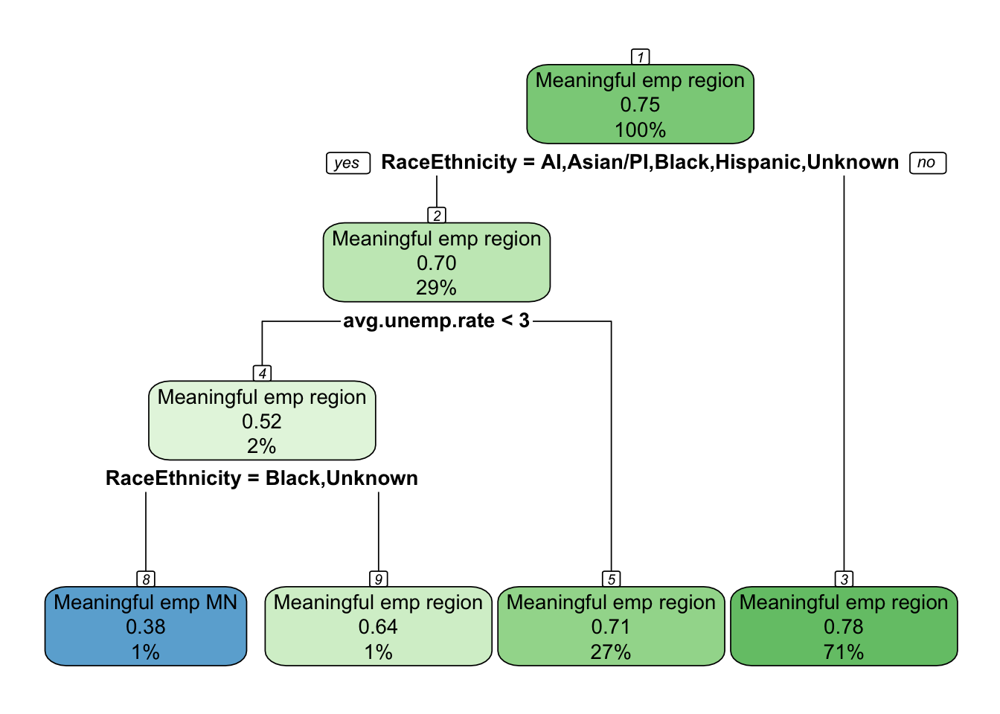
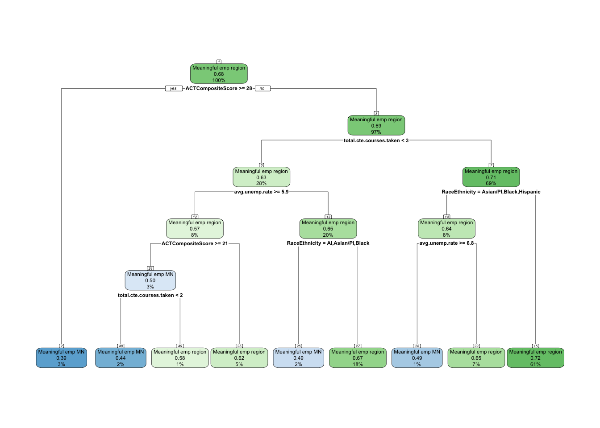
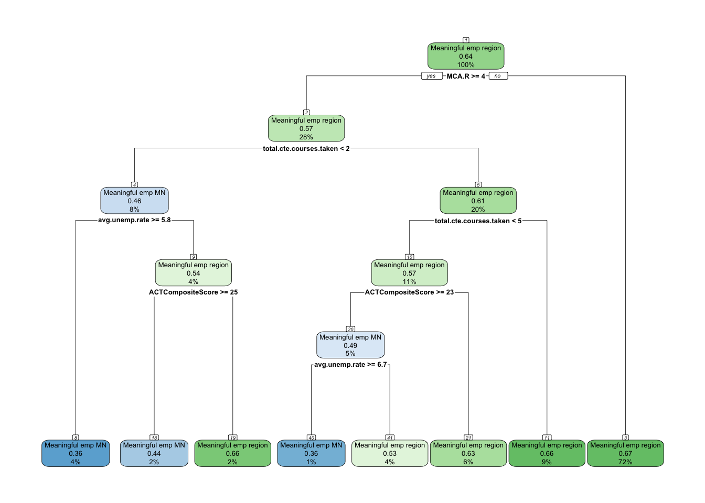
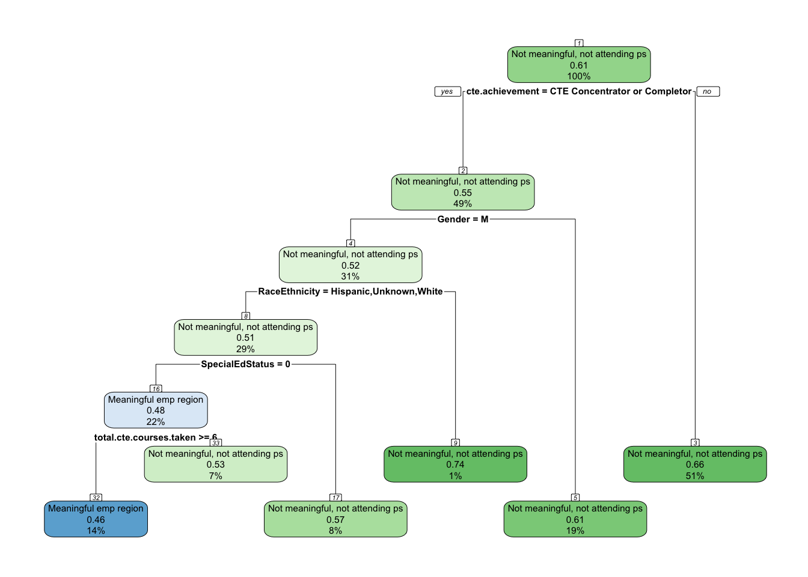
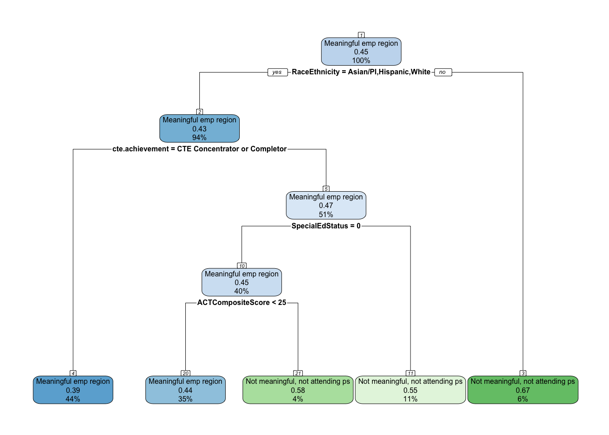
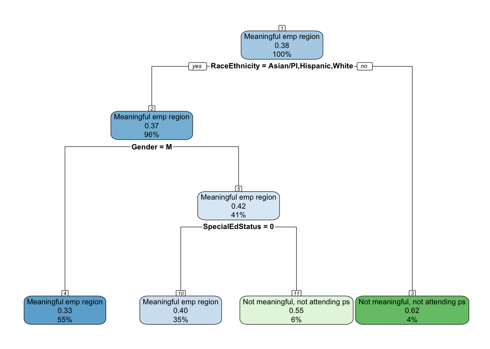
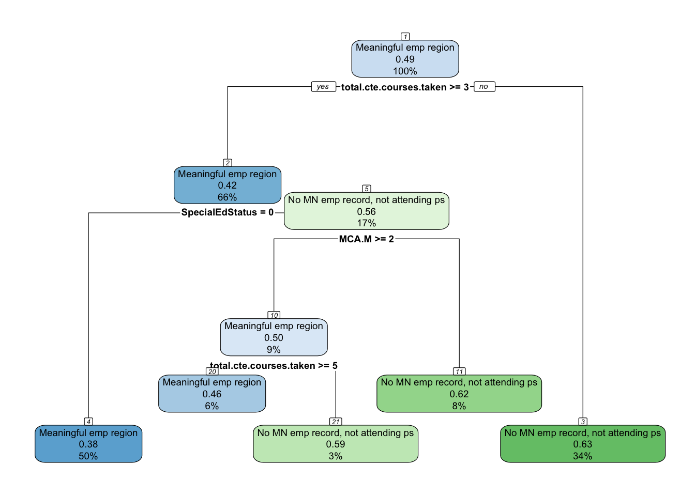
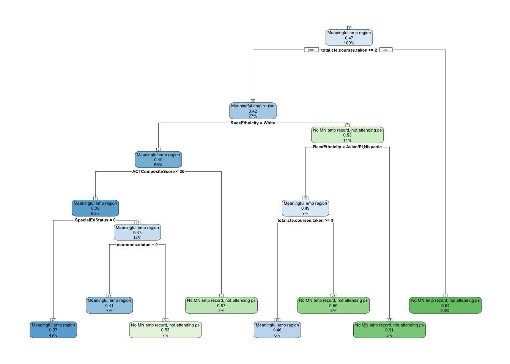
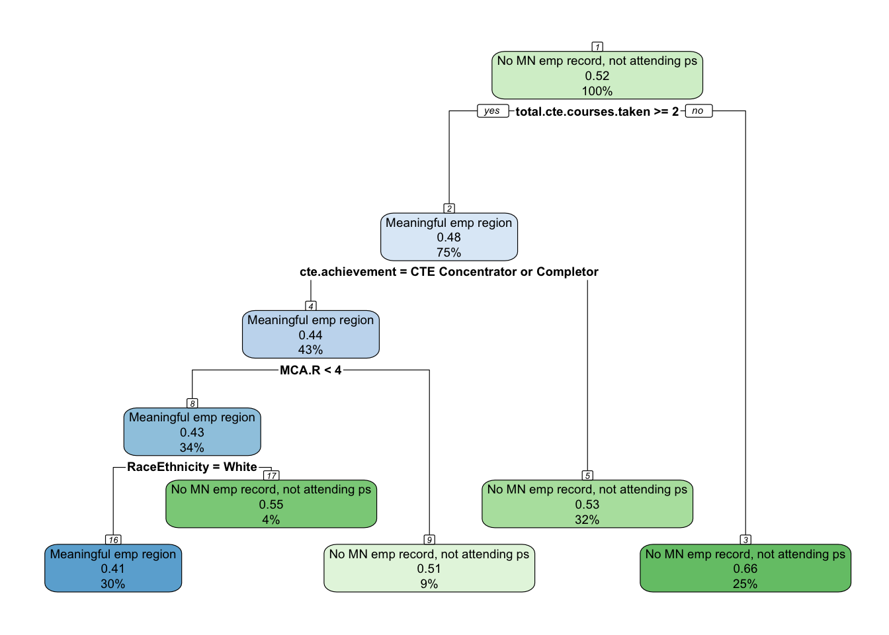

One of the aspects noticed during analysis is the percentage of individuals that never graduated college that also had meaningful employment in the region. The table below shows that 58% of the high school graduates in Central Minnesota never graduated college.
We are going to examine, more closely, this 58% of the population and see if there are patterns in which they end up in different employment outcomes 1-, 5- and 10-years after graduating high school.
Employment outcomes distribution
The following tables provide the percentage of non-college graduates that were categorized in the various employment outcomes at 1-, 5-, and 10-years after graduating high school.
Key Findings
The share of non-college graduates in meaningful regional employment increases between years one and five, but then levels off by year ten. At the same time, the proportion with no Minnesota employment record grows steadily, signaling rising long-term disconnection from the state’s workforce.
Interpretation
Year 1: 18.1% of non-college graduates were in meaningful regional employment. Most were either underemployed (34.6%) or disconnected (17.6%), with nearly one-fifth still attending postsecondary.
Year 5: The share in meaningful regional employment grew to 24.8%, nearly one in four. Combined with those employed meaningfully elsewhere in Minnesota, almost half had secured stable employment by this point. Still, another half remained split between non-meaningful work (25.5%) and no Minnesota record (23.9%).
Year 10: Regional meaningful employment held steady at 23.7%, while meaningful employment elsewhere in Minnesota reached 24.5%. However, the largest group had no Minnesota employment record (31.5%), suggesting growing detachment from the state labor force.
Conclusion
Meaningful employment in the region stabilizes at about one in four non-college graduates over time. While roughly half of this group secure stable jobs in Minnesota by year ten, an equally large share remain underemployed or disappear from the state’s workforce records. These patterns highlight both the resilience of some students in connecting to local opportunities without a degree, and the persistent risk of long-term disconnection for others.
Interpretation
One year after high school, 18.1% of non-college graduates had already secured meaningful employment in their home region. This is a significant minority given the short time frame, suggesting that a portion of students are able to connect directly into local, stable jobs. However, a larger share were in non-meaningful work (34.6%) or disconnected from the Minnesota labor market (17.6%). Another 19.4% were still attending a postsecondary institution, which reflects delayed full entry into the workforce.
Conclusion
Meaningful regional employment is possible even within the first year for non-college graduates, with nearly one in five achieving it. Yet the majority are either underemployed, disconnected, or still in school, showing that the local labor force pipeline is not yet fully capturing this population in the immediate years after high school.
Interpretation
Five years after high school, 24.8% of non-college graduates were in meaningful employment in their home region. This represents growth from the first year, showing that more students eventually connect to stable local jobs. Another 21.5% found meaningful employment elsewhere in Minnesota, while nearly half remained in less favorable situations—either not meaningful work (25.5%) or no Minnesota employment record at all (23.9%). Only 4.3% were still attending postsecondary, showing that for most in this group, the college path had closed.
Conclusion
By year five, nearly one in four non-college graduates achieved meaningful regional employment, and nearly half had meaningful employment somewhere in Minnesota. However, an equally large share remained underemployed or disconnected, underscoring a clear divide: some are able to establish themselves locally in stable jobs, while others remain at risk of long-term disconnection from the regional workforce.
Interpretation
Ten years after high school, 23.7% of non-college graduates were in meaningful employment in their home region, essentially holding steady with year five. Another 24.5% found meaningful employment elsewhere in Minnesota. However, the largest single group by year ten were those with no Minnesota employment record (31.5%), while 20.3% were working in non-meaningful jobs.
Conclusion
A decade after graduation, meaningful regional employment stabilizes at just under one-quarter of non-college graduates. While about half achieve meaningful employment in Minnesota overall, a growing share—nearly one-third—disappear from the state’s employment records. This suggests that by year ten, the divide between those who secure stable local employment and those who disconnect from the Minnesota labor market becomes even more pronounced.
This analysis is going to focus on that 58% of the graduates, and explore relationships and patterns of the portion of this population that found meaningful employment in the region vs. other employment outcomes.
Methodology
The above tables show the importance of understanding how non-college grads are navigating their post-high school pathways with a significant portion of them being disconnected from the regional workforce. To better understand these pathways, we will explore the relationships between independent variables (Demographic, High school characteristics, and High school accomplishments) along with workforce outcomes at 1-, 5- and 10-years after graduating high school.
Since we provided the descriptive statistics above, we now need to analyze which factors relate most strongly to outcomes, and then see if we can use those factors to build a predictive model.
For exploring the relationships we will do the following;
For categorical predictors (e.g., Race/Ethnicity, Gender, Economic status, CTE achievement, PSEO participation), use cross-tabs with Cramer’s V and chi-square.
For continuous predictors (e.g., ACT, MCA scores, total CTE courses, county-level variables), use ANOVA to compare means across the employment states.
Run these analyses separately for grad.year.1, grad.year.5, grad.year.10 to see how relationships shift over time.
For building the predictive model, we will do the following;
Identify important predictors
Focus on effect sizes rather than just significance (since large N will make almost everything significant).
Highlight which variables consistently show moderate-to-strong associations with employment outcomes.
These become the candidates for inclusion in CART modeling.
For each year (1, 5, 10), run CART where the dependent variable is a binary comparison with “Meaningful emp region” as the reference:
Meaningful emp region vs. Meaningful emp MN
Meaningful emp region vs. Not meaningful, not attending ps
Meaningful emp region vs. No MN emp record, not attending ps
This will:
Show which factors distinguish students who stay employed meaningfully in their region from those in other outcomes.
Provide clear decision rules (e.g., “Non-college grads with high ACT scores and PSEO experience are far more likely to achieve meaningful regional employment.”).
Feed directly into actionable insights for policymakers.
Independent variables
We are going to continue using the variables that we have used throughout this project.
High school characteristics:Dem_Desc, edr, avg.unemp.rate, avg.wages.pct.state
High school accomplishments:pseo.participant, cte.achievement, total.cte.courses.taken, ACTCompositeScore, MCA.M, MCA.R, MCA.S
Relationships
We will first explore the relationships between the independent variables and the 1-, 5- and 10-year outcomes.
Demographics
Key Findings
All demographic variables are significantly associated with employment outcomes across years one, five, and ten. Effect sizes ranged from very small for race/ethnicity to moderate for special education status, with economic status and gender in between. Ranking the strength of predictors:
Special Education Status (strongest, Cramer’s V = 0.166 → 0.075)
Economic Status (Cramer’s V = 0.106 → 0.067)
Gender (Cramer’s V = 0.086 → 0.107)
Race/Ethnicity (weakest, Cramer’s V = 0.048 → 0.052)
Interpretation
Special Education Status: The strongest and clearest predictor, with special education students much more likely to enter non-meaningful work or drop out of employment records early on. Gaps narrow by year ten, but disparities in non-meaningful jobs and disconnection remain.
Economic Status: Non–low-income students are more likely to secure meaningful employment statewide, while low-income students are overrepresented in non-meaningful jobs and disconnection. Regional meaningful employment rates are similar across groups, but job quality and broader opportunities diverge.
Gender: Males are consistently more likely to achieve meaningful employment in the region and Minnesota overall, while females are more often in non-meaningful jobs or disconnected. These differences are small in effect size but persist and grow slightly by year ten.
Race/Ethnicity: Although the weakest predictor statistically, disparities are still visible. White students are more likely to achieve meaningful regional employment, while American Indian, Black, and Hispanic students are more likely to be underemployed or disconnected. Asian/PI students stand out with higher meaningful employment outside the region but also the highest disconnection rates.
Conclusion
Demographics shape employment outcomes for non-college graduates in distinct ways. Special education status and economic disadvantage are the strongest barriers, followed by gendered differences in long-term workforce engagement. Race and ethnicity, while the weakest predictor statistically, still reveal persistent disparities, particularly for students of color. Together, these results suggest that targeted supports for special education students, low-income youth, and female graduates may be especially critical for improving long-term regional workforce participation among non-college graduates.
Gender
Key Findings
Across all years after high school, gender is significantly associated with employment outcomes, though the effect size remains small-to-moderate (Cramer’s V ranging from 0.079 to 0.107). The consistent pattern is that males are more likely to secure meaningful employment—particularly in their home region—while females are more likely to be underemployed or disconnected.
Interpretation
Year 1: Males were more likely than females to achieve meaningful regional employment (19.9% vs. 15.5%), while females were more likely to remain in postsecondary or be in non-meaningful work.
Year 5: The gap persisted, with 26.9% of males in meaningful regional employment compared to 21.9% of females. Non-meaningful employment was higher among females (28.7%) than males (23.1%).
Year 10: Differences became more pronounced. Males were more likely to achieve meaningful employment both in the region (26.0% vs. 20.8%) and in Minnesota overall (26.6% vs. 21.6%). Females were more likely to be in non-meaningful jobs (23.9% vs. 17.5%) or absent from Minnesota employment records (33.7% vs. 29.8%).
Conclusion
Gendered patterns in employment outcomes emerge early and persist over time. Males consistently achieve higher rates of meaningful regional and statewide employment, while females are more likely to remain in postsecondary, work in non-meaningful jobs, or drop out of Minnesota’s employment records. Although the statistical effect is modest, the persistence of these differences suggests that gender-specific supports may be important for improving long-term workforce participation among female non-college graduates.
Key Findings
The association between gender and employment outcomes one year after high school is statistically significant (χ²=484.8, df=4, p<0.001) with a Cramer’s V of 0.086, indicating a small effect size.
Interpretation
Meaningful employment in region: Males (19.9%) were more likely than females (15.5%) to achieve meaningful employment in the region.
Meaningful employment in MN (outside region): Rates were similar, with males (10.8%) slightly higher than females (9.6%).
Not meaningful employment: Females were more likely to be in non-meaningful work (37.9%) compared to males (32.1%).
No MN employment record: Males (18.8%) had slightly higher rates than females (15.9%).
Attending PS: Females (21.0%) were more likely than males (18.3%) to still be attending postsecondary.
Conclusion
Gender shows a small but notable association with early employment outcomes among non-college graduates. Males are more likely to achieve meaningful regional employment by year one, while females are more likely to remain in postsecondary or be employed in non-meaningful jobs. Although the effect size is modest, these differences suggest gendered patterns in how non-college graduates transition into the workforce.
Key Findings
The association between gender and employment outcomes five years after high school is statistically significant (χ²=294.7, df=4, p<0.001) with a Cramer’s V of 0.079, indicating a small effect size.
Interpretation
Meaningful employment in region: Males (26.9%) were more likely than females (21.9%) to achieve meaningful regional employment.
Meaningful employment in MN (outside region): Rates were similar, with males (22.1%) slightly higher than females (20.7%).
Not meaningful employment: Females were more likely to be in non-meaningful jobs (28.7%) compared to males (23.1%).
No MN employment record: Rates were virtually identical between females (23.9%) and males (23.9%).
Attending PS: Females (4.8%) were somewhat more likely than males (3.9%) to still be enrolled in postsecondary.
Conclusion
By year five, gender differences persist but remain modest. Males are more likely to secure meaningful regional employment, while females are more likely to be employed in non-meaningful jobs or remain enrolled in postsecondary. Overall, gender continues to shape pathways into the workforce for non-college graduates, though the effect remains small.
Key Findings
The association between gender and employment outcomes ten years after high school is statistically significant (χ²=313.5, df=3, p<0.001) with a Cramer’s V of 0.107, indicating a small-to-moderate effect size.
Interpretation
Meaningful employment in region: Males (26.0%) were more likely than females (20.8%) to secure meaningful regional employment.
Meaningful employment in MN (outside region): Males (26.6%) also outpaced females (21.6%).
Not meaningful employment: Females (23.9%) were more likely than males (17.5%) to be employed in non-meaningful jobs.
No MN employment record: Females (33.7%) were more likely than males (29.8%) to have no Minnesota employment record.
Conclusion
By year ten, gender differences in employment outcomes are more pronounced than at earlier points. Males are significantly more likely to achieve meaningful employment—both in the region and elsewhere in Minnesota—while females are more likely to be underemployed or disconnected from the Minnesota workforce. Although the effect size remains modest, these differences highlight persistent gendered patterns in long-term employment trajectories for non-college graduates.
Key Findings
Race and ethnicity are consistently associated with employment outcomes for non-college graduates across years one, five, and ten. Although effect sizes are small (Cramer’s V = 0.048–0.052), disparities persist over time, with White students more likely to achieve meaningful regional employment and students of color disproportionately represented in non-meaningful work or disconnected from Minnesota’s workforce.
Interpretation
Year 1: White students (18.0%) were more likely than American Indian (12.4%), Black (11.1%), or Hispanic (15.8%) students to achieve meaningful regional employment. American Indian and Black students had higher rates of non-meaningful employment (40.2% and 38.7%, respectively), while American Indian and Hispanic students were more likely to have no Minnesota employment record (27.3% and 25.5%).
Year 5: White students (25.7%) again led in meaningful regional employment, followed by Hispanic (20.4%), American Indian (18.4%), and Black (14.1%) students. Asian/PI students (13.8%) had the lowest rate of regional meaningful employment but the highest rate of meaningful employment outside the region (24.2%). Disconnection remained elevated for American Indian (30.4%) and Hispanic (32.9%) students.
Year 10: White students (24.5%) remained most likely to achieve meaningful regional employment, while Black (13.9%), Asian/PI (13.7%), and American Indian (16.6%) students had the lowest rates. Asian/PI (45.4%), Hispanic (42.7%), and Black (40.2%) students faced the highest levels of disconnection compared to White students (31.5%).
Conclusion
Over ten years, racial and ethnic disparities in employment outcomes for non-college graduates remain consistent. White students are most likely to secure meaningful employment in their region, while students of color—especially American Indian, Black, and Hispanic students—are more likely to experience underemployment or complete disconnection from Minnesota’s workforce. Asian/PI students stand out with higher meaningful employment outside the region but also the greatest long-term disconnection. These results suggest that structural inequities shape workforce outcomes even when all groups are limited to those who did not complete college.
Key Findings
The association between race/ethnicity and employment outcomes one year after high school is statistically significant (χ²=529.4, df=16, p<0.001) with a Cramer’s V of 0.048, indicating a very small effect size.
Interpretation
Meaningful employment in region: White students (18.0%) and Asian/PI students (11.0%) were more likely to secure meaningful regional employment than Black (11.1%), Hispanic (15.8%), or American Indian (12.4%) students.
Not meaningful employment: American Indian (40.2%) and Black (38.7%) students had notably higher rates of non-meaningful employment compared to White students (34.1%).
No MN employment record: American Indian (27.3%) and Hispanic (25.5%) students were more likely than White students (16.3%) to have no Minnesota employment record.
Attending PS: Asian/PI students (26.0%) were more likely to still be attending postsecondary compared to White students (21.7%).
Conclusion
Although the overall effect size is small, racial and ethnic disparities in early workforce outcomes are evident. White students are somewhat more likely to achieve meaningful regional employment, while American Indian, Black, and Hispanic students are disproportionately represented in non-meaningful work or disconnected from Minnesota’s workforce. These differences suggest that structural barriers continue to influence workforce entry even among students who do not complete college.
Key Findings
The association between race/ethnicity and employment outcomes five years after high school is statistically significant (χ²=455.6, df=16, p<0.001) with a Cramer’s V of 0.049, indicating a very small effect size.
Interpretation
Meaningful employment in region: White students (25.7%) were most likely to secure meaningful regional employment, while rates were lower among American Indian (18.4%), Black (14.1%), and Hispanic (20.4%) students. Asian/PI students had the lowest rate (13.8%).
Meaningful employment in MN (outside region): Black (17.9%) and Hispanic (19.3%) students lagged behind White students (21.8%). Asian/PI students had the highest share in this category (24.2%).
Not meaningful employment: Black (33.9%) and American Indian (32.9%) students were more likely to be in non-meaningful jobs compared to White students (25.1%).
No MN employment record: American Indian (30.4%) and Hispanic (32.9%) students were far more likely than White students (23.0%) to have no Minnesota employment record.
Attending PS: Rates were very low for all groups (3–6%), reflecting the end of most students’ postsecondary enrollment attempts.
Conclusion
By year five, disparities across race and ethnicity persist. White students are most likely to achieve meaningful regional employment, while American Indian, Black, and Hispanic students face higher risks of underemployment or disconnection. Asian/PI students stand out for their higher rate of meaningful employment outside the region, but their regional outcomes remain among the lowest. These patterns reinforce that racial and ethnic gaps in early workforce outcomes remain significant for non-college graduates, even as more students settle into longer-term employment paths.
Key Findings
The association between race/ethnicity and employment outcomes ten years after high school is statistically significant (χ²=221.3, df=12, p<0.001) with a Cramer’s V of 0.052, indicating a very small effect size.
Interpretation
Meaningful employment in region: White students (24.5%) were more likely to achieve meaningful regional employment than American Indian (16.6%), Black (13.9%), Hispanic (18.1%), or Asian/PI (13.7%) students.
Meaningful employment in MN (outside region): White students (24.8%) again led, while Asian/PI students (23.9%) were close behind. Rates were lower among American Indian (18.1%), Black (20.2%), and Hispanic (21.1%) students.
No MN employment record: Disconnection was most pronounced among Asian/PI (45.4%), Hispanic (42.7%), and Black (40.2%) students, compared to 31.5% of White students.
Not meaningful employment: American Indian (29.7%) and Black (25.7%) students were most likely to be in non-meaningful jobs, compared to 20.0% of White students.
Conclusion
By year ten, racial and ethnic disparities remain visible. White students are most likely to achieve meaningful regional employment, while students of color—particularly American Indian, Black, and Hispanic—are more likely to be underemployed or disconnected from the Minnesota workforce. Asian/PI students stand out for relatively higher meaningful employment outside the region but also the highest levels of disconnection. Although the overall effect size is small, the persistence of these gaps suggests long-term structural disadvantages for students of color who do not graduate from college.
Key Findings
Economic status is consistently associated with outcomes across years one, five, and ten, with small-to-moderate effect sizes that taper over time (Cramer’s V: 0.106 → 0.075 → 0.067). Differences in meaningful employment in the region are small, but gaps are clearer for non-meaningful work and disconnection, where low-income students fare worse.
Interpretation
Year 1: Regional meaningful employment rates are nearly identical (18.0% non–low-income vs. 18.2% low-income). However, low-income students are more concentrated in non-meaningful jobs (38.1% vs. 32.0%) and slightly more likely to have no MN employment record (18.6% vs. 16.8%). Non–low-income students are more often still attending PS (22.9% vs. 14.9%).
Year 5: A small edge emerges for regional meaningful employment (25.3% non–low-income vs. 24.1% low-income) and a clearer gap for meaningful MN (outside region) (23.1% vs. 19.3%). Low-income students remain more concentrated in non-meaningful jobs (28.4% vs. 23.3%); disconnection rates are similar (~24%).
Year 10: Regional meaningful employment is again close (24.1% non–low-income vs. 23.3% low-income), but non–low-income students retain an advantage in meaningful MN (outside region) (26.5% vs. 21.6%). Low-income students are more likely to be non-meaningfully employed (22.6% vs. 18.6%) and slightly more likely to have no MN record (32.5% vs. 30.8%).
Conclusion
Economic disadvantage does not substantially change the share achieving meaningful employment in the region, but it does shift outcomes toward non-meaningful work and disconnection, and away from meaningful employment elsewhere in MN. In practice: to raise regional meaningful employment among low-income non–college grads, interventions should focus on upgrading job quality and retention (e.g., paid work-based learning, credential-in-place supports, transportation/childcare, and employer partnerships) rather than expecting large differences in initial regional placement rates.
Key Findings
The association between economic status and employment outcomes one year after high school is statistically significant (χ²=731.2, df=4, p<0.001) with a Cramer’s V of 0.106, indicating a small-to-moderate effect size.
Interpretation
Meaningful employment in region: Rates were nearly identical between non-low-income (18.0%) and low-income (18.2%) students.
Meaningful employment in MN (outside region): Outcomes were also similar, with 10.4% for non-low-income and 10.2% for low-income students.
Not meaningful employment: A key difference emerged here: 38.1% of low-income students were in non-meaningful jobs, compared to 32.0% of non-low-income students.
No MN employment record: Low-income students (18.6%) were slightly more likely than non-low-income students (16.8%) to have no record.
Attending PS: Non-low-income students (22.9%) were more likely than low-income students (14.9%) to still be in postsecondary one year out.
Conclusion
Economic status shows its strongest influence in shaping early employment quality. Low-income students are more likely to enter non-meaningful work or drop out of Minnesota’s employment records, while non-low-income students are more likely to remain connected to postsecondary education. Although rates of meaningful regional employment are nearly identical across groups at year one, the overall distribution highlights the early disadvantages facing low-income students.
Key Findings
The association between economic status and employment outcomes five years after high school is statistically significant (χ²=272.2, df=4, p<0.001) with a Cramer’s V of 0.075, indicating a small effect size.
Interpretation
Meaningful employment in region: Non-low-income students (25.3%) were slightly more likely than low-income students (24.1%) to achieve meaningful regional employment.
Meaningful employment in MN (outside region): The gap was more noticeable here, with 23.1% of non-low-income students in meaningful jobs elsewhere in Minnesota compared to 19.3% of low-income students.
Not meaningful employment: Low-income students were more likely to be in non-meaningful jobs (28.4%) than non-low-income students (23.3%).
No MN employment record: Rates were very similar (23.4% non-low-income vs. 24.6% low-income).
Attending PS: Non-low-income students (4.9%) were slightly more likely than low-income students (3.5%) to still be enrolled.
Conclusion
By year five, disparities in outcomes by economic status are clearer. Non-low-income students are more likely to secure meaningful employment both in the region and across Minnesota, while low-income students are more likely to be concentrated in non-meaningful jobs. Differences in disconnection rates are minimal, but the overall trend points to greater vulnerability to underemployment among low-income students.
Key Findings
The association between economic status and employment outcomes ten years after high school is statistically significant (χ²=122.4, df=3, p<0.001) with a Cramer’s V of 0.067, indicating a small effect size.
Interpretation
Meaningful employment in region: Rates were nearly identical, with 24.1% of non-low-income and 23.3% of low-income students in meaningful regional jobs.
Meaningful employment in MN (outside region): A larger gap appeared here: 26.5% of non-low-income students achieved meaningful employment elsewhere in Minnesota, compared to 21.6% of low-income students.
Not meaningful employment: Low-income students (22.6%) were more likely than non-low-income students (18.6%) to be in non-meaningful jobs.
No MN employment record: Disconnection remained high for both groups, though slightly greater among low-income students (32.5%) compared to non-low-income students (30.8%).
Conclusion
By year ten, differences in meaningful regional employment by economic status are minimal, but gaps persist in other areas. Non-low-income students are more likely to secure meaningful employment elsewhere in Minnesota, while low-income students are more often underemployed or disconnected. These patterns show that economic disadvantage exerts a lasting influence, primarily by increasing the risk of lower-quality employment outcomes.
Key Findings
Special education status is one of the strongest demographic predictors of employment outcomes among non-college graduates, though its influence declines over time (Cramer’s V: 0.166 → 0.096 → 0.075). The biggest differences are visible in year one, where special education students are much more likely to be disconnected or in non-meaningful jobs. By year ten, disparities in regional meaningful employment largely disappear, though gaps remain in other outcomes.
Interpretation
Year 1: Non-special ed students were more likely to achieve meaningful regional employment (18.5% vs. 16.6%) and meaningful MN employment overall (10.7% vs. 8.9%). Special ed students were far more concentrated in non-meaningful jobs (40.4% vs. 32.9%) and disconnection (24.9% vs. 15.5%), and less likely to remain in postsecondary (9.2% vs. 22.3%).
Year 5: The gap narrowed, but non-special ed students still had an advantage in meaningful regional employment (25.1% vs. 23.7%) and especially meaningful employment elsewhere in MN (22.8% vs. 16.4%). Special ed students continued to show higher rates of non-meaningful work (29.9% vs. 24.3%) and disconnection (27.6% vs. 23.0%).
Year 10: Regional meaningful employment rates were nearly identical (23.8% vs. 23.6%). However, non-special ed students were more likely to achieve meaningful work outside the region (25.8% vs. 18.9%), while special ed students were more often in non-meaningful jobs (24.5% vs. 19.2%) or disconnected (33.0% vs. 31.1%).
Conclusion
Special education students face substantial disadvantages in the first years after high school, entering non-meaningful work or falling out of the workforce at higher rates than peers. Over time, they achieve parity in regional meaningful employment, but they remain less likely to access broader opportunities across Minnesota and more likely to face underemployment or disconnection. These findings suggest that targeted interventions in the early transition years after high school are especially critical for improving long-term outcomes among students with special education status.
Key Findings
The association between special education status and employment outcomes one year after high school is statistically significant (χ²=1791.5, df=4, p<0.001) with a Cramer’s V of 0.166, indicating a moderate effect size — stronger than other demographic variables at this early stage.
Interpretation
Meaningful employment in region: Students without special education status (18.5%) were somewhat more likely than those with special education status (16.6%) to achieve meaningful regional employment.
Meaningful employment in MN (outside region): A similar gap exists (10.7% non-special ed vs. 8.9% special ed).
Not meaningful employment: Students with special education status were far more likely to be in non-meaningful jobs (40.4%) compared to peers without special ed (32.9%).
No MN employment record: Special education students (24.9%) were much more likely than non-special ed students (15.5%) to have no Minnesota employment record.
Attending PS: Non-special ed students (22.3%) were more likely than special ed students (9.2%) to still be attending postsecondary one year out.
Conclusion
Special education status is one of the strongest demographic predictors of early employment outcomes among non-college graduates. Students with special education status are more likely to be disconnected or in non-meaningful jobs, and less likely to remain enrolled in postsecondary or achieve meaningful employment in the region. These differences highlight the additional barriers faced by special education students in transitioning to the workforce without a college degree.
Key Findings
The association between special education status and employment outcomes five years after high school is statistically significant (χ²=443.7, df=4, p<0.001) with a Cramer’s V of 0.096, indicating a small-to-moderate effect size. The strength of association has declined since year one but remains meaningful.
Interpretation
Meaningful employment in region: Non-special ed students (25.1%) were slightly more likely than special ed students (23.7%) to achieve meaningful regional employment.
Meaningful employment in MN (outside region): Non-special ed students (22.8%) outpaced special ed students (16.4%).
Not meaningful employment: Students with special education status had higher rates of non-meaningful jobs (29.9%) compared to non-special ed students (24.3%).
No MN employment record: Special education students were more disconnected (27.6%) than non-special ed students (23.0%).
Attending PS: Non-special ed students were about twice as likely to still be enrolled (4.8% vs. 2.3%).
Conclusion
By year five, disparities by special education status persist, though the gaps are smaller than at year one. Non-special ed students remain more likely to achieve meaningful employment both in the region and statewide, while special education students face elevated risks of non-meaningful work and disconnection. This indicates continuing structural barriers for special education students in transitioning into stable employment.
Key Findings
The association between special education status and employment outcomes ten years after high school is statistically significant (χ²=151.9, df=3, p<0.001) with a Cramer’s V of 0.075, indicating a small effect size. The strength of the relationship has diminished compared to earlier years, though differences remain.
Interpretation
Meaningful employment in region: Rates were nearly the same—23.8% for non-special ed students and 23.6% for special ed students.
Meaningful employment in MN (outside region): Non-special ed students (25.8%) were more likely than special ed students (18.9%) to achieve meaningful work elsewhere in Minnesota.
Not meaningful employment: Special ed students had higher rates of non-meaningful jobs (24.5%) than non-special ed students (19.2%).
No MN employment record: Special ed students (33.0%) were slightly more likely than non-special ed students (31.1%) to be disconnected from Minnesota’s workforce.
Conclusion
By year ten, gaps in meaningful regional employment by special education status have largely closed. However, disparities persist elsewhere: non-special ed students are more likely to secure meaningful work in Minnesota outside the region, while special ed students face higher risks of underemployment or disconnection. These results suggest that while some barriers ease over time, special education students remain disproportionately concentrated in less stable workforce outcomes.
Key Findings
High school context variables show consistent but small associations with employment outcomes across years one, five, and ten. Compared to Demographics, these effects are weaker, but they highlight how regional and local economic conditions shape whether non-college graduates secure meaningful employment in their home region, elsewhere in Minnesota, or fall into less favorable outcomes.
Ranking of influence:
Rural/Urban Context (Dem_Desc) – strongest, Cramer’s V up to 0.100
Economic Development Region (EDR) – Cramer’s V up to 0.084
County Wages – modest but consistent effects (0.3–1.1 pp)
County Unemployment – weakest, small contextual effect (0.1–0.4 pp)
Interpretation
Rural/Urban Context: Rural/town students are more likely to stay and secure meaningful regional employment, while urban students are much more likely to migrate for meaningful jobs elsewhere in Minnesota. This divide grows stronger over time.
EDR: Regional differences are small but clear. North Central students are more likely to achieve meaningful employment in their home region, while East Central students are more likely to find meaningful work outside their region. Central students fall in between.
County Unemployment: Students from lower-unemployment counties are slightly more likely to secure meaningful regional employment, while those from higher-unemployment counties face somewhat higher risks of non-meaningful jobs or disconnection. Effects are consistent but weak.
County Wages: Higher-wage counties are tied to meaningful employment outside the home region, while lower-wage counties are associated with remaining in regional jobs or landing in less favorable categories. This wage-based “push-pull” dynamic is stable across all years.
Conclusion
High school characteristics matter less than demographic factors but still shape employment pathways. Rural/urban context and EDR have the clearest effects, influencing whether students work close to home or migrate for opportunities. Economic context (wages, unemployment) provides modest additional influence: stronger local economies support attachment to meaningful jobs, while weaker local economies increase risks of disconnection. Together, these results suggest that while individual-level supports are critical, regional economic development and job quality initiatives are also necessary to improve long-term outcomes for non-college graduates.
edr
Key Findings
EDR is consistently associated with employment outcomes across years one, five, and ten, though effect sizes remain small (Cramer’s V: 0.058 → 0.075 → 0.084). The strongest contrasts are between North Central and East Central: North Central students are more likely to secure meaningful employment in their home region, while East Central students are more likely to migrate for meaningful work elsewhere in Minnesota.
Interpretation
Year 1: Regional meaningful employment was highest among North Central students (20.4%), compared to Central (18.2%) and East Central (15.5%). East Central students were more likely to find meaningful work outside their region (12.2% vs. 7.6% in North Central).
Year 5: Gaps widened. North Central students led in meaningful regional employment (28.2%), while East Central lagged (19.8%). Conversely, East Central students were far more likely to find meaningful employment elsewhere in Minnesota (25.5%), compared to Central (22.2%) and North Central (15.6%).
Year 10: The same pattern persisted. North Central students had the highest regional meaningful employment (27.3%) but the lowest meaningful employment elsewhere (17.4%). East Central students had the lowest regional meaningful employment (18.6%) but the highest meaningful employment outside the region (29.5%). Central students consistently fell between the two extremes.
Conclusion
Regional labor markets shape where non-college graduates find meaningful employment. North Central students are more likely to stay and succeed locally, while East Central students are more likely to migrate for opportunities elsewhere in Minnesota. Central students show a balance between these two patterns. Although the overall effect of EDR is small compared to demographics, these findings emphasize the importance of local economic conditions in determining whether non-college graduates can build stabl
Key Findings
The association between high school Economic Development Region (EDR) and employment outcomes one year after high school is statistically significant (χ²=436.7, df=8, p<0.001) with a Cramer’s V of 0.058, indicating a very small effect size.
Interpretation
Meaningful employment in region: Rates varied by region, from 15.5% in East Central to 20.4% in North Central, with Central falling in between (18.2%).
Meaningful employment in MN (outside region): East Central had the highest share (12.2%), compared to 7.6% in North Central and 10.6% in Central.
Not meaningful employment: Fairly similar across regions, ranging from 34.1% to 35.7%.
No MN employment record: Slightly higher in North Central (20.2%) compared to East Central (18.2%) and Central (16.2%).
Attending PS: Central students were most likely to still be in postsecondary (20.7%), compared to North Central (17.7%) and East Central (18.4%).
Conclusion
Regional differences in outcomes exist but are relatively small in magnitude. North Central students are somewhat more likely to achieve meaningful employment in their home region, while East Central students are more likely to find meaningful work elsewhere in Minnesota. Overall, EDR plays a modest role compared to demographic factors, though local labor markets do shape the balance between regional employment and disconnection.
Key Findings
The association between high school Economic Development Region (EDR) and employment outcomes five years after high school is statistically significant (χ²=539.0, df=8, p<0.001) with a Cramer’s V of 0.075, indicating a small effect size.
Interpretation
Meaningful employment in region: North Central students had the highest rate (28.2%), followed by Central (25.7%) and East Central (19.8%).
Meaningful employment in MN (outside region): East Central students were most likely to find meaningful work outside their home region (25.5%), compared to Central (22.2%) and North Central (15.6%).
Not meaningful employment: Fairly similar across regions, ranging from 24.7% in Central to 27.1% in East Central.
No MN employment record: Highest in North Central (26.8%), compared to 23.4% in East Central and 22.9% in Central.
Attending PS: Small differences remain (3.8%–4.6%), reflecting the tail end of postsecondary enrollment.
Conclusion
By year five, regional patterns become clearer. North Central students are more likely to achieve meaningful employment in their home region, while East Central students are more likely to find meaningful work elsewhere in Minnesota. Central students fall between the two. Although effect sizes remain small, these differences suggest that local labor market conditions and opportunities shape whether non-college graduates work close to home or migrate for meaningful employment.
Key Findings
The association between high school Economic Development Region (EDR) and employment outcomes ten years after high school is statistically significant (χ²=380.3, df=6, p<0.001) with a Cramer’s V of 0.084, indicating a small effect size.
Interpretation
Meaningful employment in region: North Central students were most likely to achieve meaningful regional employment (27.3%), followed by Central (24.7%) and East Central (18.6%).
Meaningful employment in MN (outside region): East Central students were most likely to find meaningful work elsewhere in Minnesota (29.5%), compared to Central (25.3%) and North Central (17.4%).
Not meaningful employment: Similar across regions, ranging from 19.1% in Central to 22.2% in East Central.
No MN employment record: Highest in North Central (34.6%), compared to Central (30.9%) and East Central (29.8%).
Conclusion
By year ten, regional differences in workforce outcomes remain consistent with earlier years. North Central students are more likely to stay and find meaningful work in their home region, while East Central students are more likely to leave the region for meaningful work elsewhere in Minnesota. Central students fall in between. Although effect sizes remain small, these patterns highlight the influence of regional labor markets in shaping whether non-college graduates build careers locally or migrate within the state.
Key Findings
Rural/urban context is consistently associated with employment outcomes across years one, five, and ten, with small effect sizes that grow slightly over time (Cramer’s V: 0.070 → 0.093 → 0.100). The strongest contrast is between town/rural mix and entirely urban schools: rural/town students are more likely to stay and work meaningfully in their home region, while urban students are far more likely to migrate for meaningful employment elsewhere in Minnesota.
Interpretation
Year 1: Town/rural mix students were most likely to achieve meaningful regional employment (20.4%), while urban students lagged (13.2%). Urban students were more likely to secure meaningful work outside their region (14.3% vs. 7.6% for town/rural mix).
Year 5: The divide widened. Town/rural mix students led in regional meaningful employment (28.2%), while urban students lagged again (17.0%). Conversely, urban students were much more likely to secure meaningful employment outside their region (29.8% vs. 15.6%).
Year 10: The same pattern persisted. Town/rural mix students had the highest meaningful regional employment (27.3%), while urban students had the lowest (15.5%). Urban students were far more likely to migrate for meaningful jobs elsewhere in Minnesota (34.1%), compared to 17.4% for town/rural mix. Urban/town/rural mix schools consistently fell in between.
Conclusion
The rural–urban divide in employment outcomes for non-college graduates is clear and persistent. Rural/town students are more likely to stay and secure meaningful work in their home region, while urban students are more likely to migrate for meaningful jobs elsewhere in Minnesota. Although the effect size is small, these patterns highlight how geography and local labor markets influence whether students without college degrees build stable careers close to home or rely on mobility to find meaningful employment.
Key Findings
The association between school rural/urban context and employment outcomes one year after high school is statistically significant (χ²=641.5, df=8, p<0.001) with a Cramer’s V of 0.070, indicating a small effect size.
Interpretation
Meaningful employment in region: Students from town/rural mix schools were most likely to secure meaningful regional employment (20.4%), compared to 18.6% from urban/town/rural mix schools and 13.2% from entirely urban schools.
Meaningful employment in MN (outside region): Entirely urban students were most likely to find meaningful employment outside the region (14.3%), compared to 10.2% for urban/town/rural mix and 7.6% for town/rural mix.
Not meaningful employment: Rates were similar across all contexts (34–35%).
No MN employment record: Town/rural mix students had the highest disconnection (20.2%), compared to 16.2% for urban and 17.0% for urban/town/rural mix.
Attending PS: Urban students were most likely to still be in postsecondary (22.3%), compared to 19.3% of urban/town/rural mix and 17.7% of town/rural mix students.
Conclusion
High school rural/urban context shapes early employment trajectories in meaningful ways. Rural/town students are more likely to find meaningful employment in their home region, while urban students are more likely to pursue postsecondary or find meaningful work outside their region. Effect sizes remain small, but the differences highlight how local opportunities interact with geography to influence whether non-college graduates work locally, migrate, or remain in school.
Key Findings
The association between school rural/urban context and employment outcomes five years after high school is statistically significant (χ²=818.9, df=8, p<0.001) with a Cramer’s V of 0.093, indicating a small effect size, somewhat stronger than at year one.
Interpretation
Meaningful employment in region: Students from town/rural mix schools were most likely to achieve meaningful regional employment (28.2%), compared to 25.8% from urban/town/rural mix schools and just 17.0% from entirely urban schools.
Meaningful employment in MN (outside region): Urban students were far more likely to work meaningfully outside their home region (29.8%), compared to 21.3% from urban/town/rural mix and 15.6% from town/rural mix.
Not meaningful employment: Very similar across all contexts (~25–26%).
No MN employment record: Higher among town/rural mix students (26.8%) than urban/town/rural mix (23.2%) and entirely urban (22.5%).
Attending PS: Still low across groups, with slightly higher shares for urban students (5.5%) compared to town/rural mix (3.8%).
Conclusion
By year five, differences in outcomes by school context are clearer. Rural/town students are more likely to stay and find meaningful employment locally, while urban students are more likely to secure meaningful jobs outside their region. Urban/town/rural mix schools fall in between. While the effect size is still small, the rural–urban divide in workforce attachment versus geographic mobility is more pronounced by this stage.
Key Findings
The association between school rural/urban context and employment outcomes ten years after high school is statistically significant (χ²=543.1, df=6, p<0.001) with a Cramer’s V of 0.100, indicating a small effect size, slightly stronger than at earlier years.
Interpretation
Meaningful employment in region: Students from town/rural mix schools were most likely to achieve meaningful regional employment (27.3%), compared to 24.9% from urban/town/rural mix schools and 15.5% from entirely urban schools.
Meaningful employment in MN (outside region): Urban students were far more likely to find meaningful work outside their region (34.1%) compared to 24.3% from urban/town/rural mix and 17.4% from town/rural mix.
No MN employment record: Disconnection was highest for town/rural mix students (34.6%), compared to 30.9% for urban/town/rural mix and 29.4% for urban students.
Not meaningful employment: Similar across contexts (20–21%).
Conclusion
By year ten, the rural–urban divide is clear. Rural/town students are most likely to remain and work meaningfully in their home region, while urban students are far more likely to migrate for meaningful employment elsewhere in Minnesota. Urban/town/rural mix schools show more balanced outcomes. Although the effect size remains small, these patterns highlight geographic mobility as a key differentiator in long-term workforce outcomes for non-college graduates.
Key Findings
County unemployment rate is significantly associated with outcomes at all three checkpoints, with the relationship weakening over time (ANOVA: Year 1 F=125.9; Year 5 F=34.4; Year 10 F=10.8; all p<0.001). Lower local unemployment is linked to a higher likelihood of meaningful employment in the region (and statewide), while higher unemployment tilts outcomes toward less favorable states. Differences between meaningful in region vs meaningful elsewhere in MN are consistently small and often not significant.
Interpretation
Year 1: Students in meaningful jobs (regional or MN-wide) come from counties with markedly lower unemployment than those still attending PS. The gap between the two meaningful categories is small (~0.14 percentage points) though statistically detectable.
Year 5: The pattern holds: both meaningful categories are associated with lower unemployment than the PS group. The difference between meaningful in region vs meaningful in MN is not significant, indicating place-based labor strength supports meaningful work generally, not just locally.
Year 10: Effects attenuate but persist. Non-meaningful and no MN record outcomes are tied to counties with higher unemployment than meaningful categories (~0.09–0.14 pp higher), while regional vs MN meaningful again shows no meaningful difference.
Conclusion
Stronger local labor markets modestly raise the odds of meaningful regional employment for non-college graduates, but the effect is small and fades over time as individual trajectories solidify. Policy efforts to improve job access and quality in higher-unemployment counties (employer partnerships, placement supports, transportation/childcare) can help, but the largest gains will likely come when place-based strategies are paired with individual-level supports identified in stronger predictors (e.g., special education status, economic disadvantage, academic preparation).
Key Findings
The ANOVA results show a strong and statistically significant association between county unemployment rate and employment outcomes (F(4, 64,904) = 125.9, p < 0.001).
Interpretation
Students in meaningful regional employment came from counties with unemployment rates significantly lower than those in less favorable categories.
Compared to those still attending PS, unemployment rates were lower by about 0.40 percentage points for meaningful regional employment and 0.54 points for meaningful MN employment.
Students in non-meaningful jobs were associated with unemployment rates 0.24 points higher than those in meaningful regional employment.
Students with no MN employment record were also linked to counties with higher unemployment rates (0.16 points higher).
The difference between meaningful regional and meaningful MN employment was modest but statistically significant (0.14 points).
Conclusion
At one year after high school, non-college graduates from counties with lower unemployment rates are more likely to secure meaningful employment—either in their home region or elsewhere in Minnesota. Those from higher-unemployment counties are disproportionately represented in non-meaningful jobs or disconnected from the state’s workforce. While differences are less dramatic than those tied to individual-level factors, these results underscore how local economic health influences early workforce attachment.
data <- master.original %>%filter(grad.year.1!="After 2023") %>%filter(ps.grad =="No")summary <-aov(avg.unemp.rate ~ grad.year.1, data = data)summary
Call:
aov(formula = avg.unemp.rate ~ grad.year.1, data = data)
Terms:
grad.year.1 Residuals
Sum of Squares 768.23 91961.54
Deg. of Freedom 4 53073
Residual standard error: 1.316335
Estimated effects may be unbalanced
anova_df <- broom::tidy(summary)TukeyHSD(summary)
Tukey multiple comparisons of means
95% family-wise confidence level
Fit: aov(formula = avg.unemp.rate ~ grad.year.1, data = data)
$grad.year.1
diff
Meaningful emp MN-Attending ps -0.39414243
Meaningful emp region-Attending ps -0.31938428
No MN emp record, not attending ps-Attending ps -0.15578155
Not meaningful, not attending ps-Attending ps -0.21230281
Meaningful emp region-Meaningful emp MN 0.07475815
No MN emp record, not attending ps-Meaningful emp MN 0.23836087
Not meaningful, not attending ps-Meaningful emp MN 0.18183961
No MN emp record, not attending ps-Meaningful emp region 0.16360272
Not meaningful, not attending ps-Meaningful emp region 0.10708146
Not meaningful, not attending ps-No MN emp record, not attending ps -0.05652126
lwr
Meaningful emp MN-Attending ps -0.462910246
Meaningful emp region-Attending ps -0.367383310
No MN emp record, not attending ps-Attending ps -0.204157194
Not meaningful, not attending ps-Attending ps -0.255799442
Meaningful emp region-Meaningful emp MN 0.005448243
No MN emp record, not attending ps-Meaningful emp MN 0.168789625
Not meaningful, not attending ps-Meaningful emp MN 0.115568105
No MN emp record, not attending ps-Meaningful emp region 0.114459534
Not meaningful, not attending ps-Meaningful emp region 0.062732765
Not meaningful, not attending ps-No MN emp record, not attending ps -0.101277291
upr
Meaningful emp MN-Attending ps -0.32537461
Meaningful emp region-Attending ps -0.27138524
No MN emp record, not attending ps-Attending ps -0.10740591
Not meaningful, not attending ps-Attending ps -0.16880619
Meaningful emp region-Meaningful emp MN 0.14406806
No MN emp record, not attending ps-Meaningful emp MN 0.30793212
Not meaningful, not attending ps-Meaningful emp MN 0.24811112
No MN emp record, not attending ps-Meaningful emp region 0.21274591
Not meaningful, not attending ps-Meaningful emp region 0.15143016
Not meaningful, not attending ps-No MN emp record, not attending ps -0.01176523
p adj
Meaningful emp MN-Attending ps 0.0000000
Meaningful emp region-Attending ps 0.0000000
No MN emp record, not attending ps-Attending ps 0.0000000
Not meaningful, not attending ps-Attending ps 0.0000000
Meaningful emp region-Meaningful emp MN 0.0270013
No MN emp record, not attending ps-Meaningful emp MN 0.0000000
Not meaningful, not attending ps-Meaningful emp MN 0.0000000
No MN emp record, not attending ps-Meaningful emp region 0.0000000
Not meaningful, not attending ps-Meaningful emp region 0.0000000
Not meaningful, not attending ps-No MN emp record, not attending ps 0.0051780
Key Findings
The ANOVA results show a strong and statistically significant association between county unemployment rate and employment outcomes (F(4, 47,788) = 34.4, p < 0.001).
Interpretation
Students in meaningful regional employment came from counties with unemployment rates significantly lower than those still in postsecondary or in less favorable employment states.
Compared to those attending PS, unemployment rates were about 0.44 points lower for meaningful regional employment and 0.49 points lower for meaningful employment elsewhere in Minnesota.
Students with no MN employment record were associated with unemployment rates about 0.41 points higher than those still in PS.
Students in non-meaningful jobs came from counties with unemployment rates 0.34 points higher.
The difference between meaningful regional and meaningful MN employment was small (0.05 points) and not statistically significant.
Conclusion
Five years after high school, non-college graduates from counties with lower unemployment rates are more likely to be in meaningful employment (regional or statewide), while those from higher-unemployment counties are more often disconnected or in non-meaningful jobs. The effect remains modest but consistent, reinforcing the role of local economic health in shaping workforce outcomes over time.
data <- master.original %>%filter(grad.year.5!="After 2023") %>%filter(ps.grad =="No")summary <-aov(avg.unemp.rate ~ grad.year.5, data = data)summary
Call:
aov(formula = avg.unemp.rate ~ grad.year.5, data = data)
Terms:
grad.year.5 Residuals
Sum of Squares 231.27 72258.52
Deg. of Freedom 4 39044
Residual standard error: 1.360402
Estimated effects may be unbalanced
anova_df <- broom::tidy(summary)TukeyHSD(summary)
Tukey multiple comparisons of means
95% family-wise confidence level
Fit: aov(formula = avg.unemp.rate ~ grad.year.5, data = data)
$grad.year.5
diff
Meaningful emp MN-Attending ps -0.187373279
Meaningful emp region-Attending ps -0.299212969
No MN emp record, not attending ps-Attending ps -0.320753265
Not meaningful, not attending ps-Attending ps -0.306336657
Meaningful emp region-Meaningful emp MN -0.111839690
No MN emp record, not attending ps-Meaningful emp MN -0.133379986
Not meaningful, not attending ps-Meaningful emp MN -0.118963378
No MN emp record, not attending ps-Meaningful emp region -0.021540296
Not meaningful, not attending ps-Meaningful emp region -0.007123687
Not meaningful, not attending ps-No MN emp record, not attending ps 0.014416608
lwr
Meaningful emp MN-Attending ps -0.28427679
Meaningful emp region-Attending ps -0.38903383
No MN emp record, not attending ps-Attending ps -0.41141873
Not meaningful, not attending ps-Attending ps -0.39778309
Meaningful emp region-Meaningful emp MN -0.17239404
No MN emp record, not attending ps-Meaningful emp MN -0.19518022
Not meaningful, not attending ps-Meaningful emp MN -0.18190377
No MN emp record, not attending ps-Meaningful emp region -0.07150793
Not meaningful, not attending ps-Meaningful emp region -0.05849477
Not meaningful, not attending ps-No MN emp record, not attending ps -0.03841736
upr
Meaningful emp MN-Attending ps -0.09046976
Meaningful emp region-Attending ps -0.20939211
No MN emp record, not attending ps-Attending ps -0.23008780
Not meaningful, not attending ps-Attending ps -0.21489022
Meaningful emp region-Meaningful emp MN -0.05128534
No MN emp record, not attending ps-Meaningful emp MN -0.07157975
Not meaningful, not attending ps-Meaningful emp MN -0.05602299
No MN emp record, not attending ps-Meaningful emp region 0.02842734
Not meaningful, not attending ps-Meaningful emp region 0.04424740
Not meaningful, not attending ps-No MN emp record, not attending ps 0.06725057
p adj
Meaningful emp MN-Attending ps 0.0000013
Meaningful emp region-Attending ps 0.0000000
No MN emp record, not attending ps-Attending ps 0.0000000
Not meaningful, not attending ps-Attending ps 0.0000000
Meaningful emp region-Meaningful emp MN 0.0000047
No MN emp record, not attending ps-Meaningful emp MN 0.0000000
Not meaningful, not attending ps-Meaningful emp MN 0.0000025
No MN emp record, not attending ps-Meaningful emp region 0.7652396
Not meaningful, not attending ps-Meaningful emp region 0.9956597
Not meaningful, not attending ps-No MN emp record, not attending ps 0.9460218
Key Findings
The ANOVA results show a statistically significant association between county unemployment rate and employment outcomes (F(3, 27,144) = 10.8, p < 0.001). The effect is weaker than at years one and five but remains meaningful.
Interpretation
Students in meaningful regional employment came from counties with unemployment rates modestly lower than those in less favorable outcomes.
Compared to those in non-meaningful jobs, meaningful regional employment was linked to unemployment rates about 0.11 points lower.
Compared to students with no MN employment record, the gap was about 0.09 points lower.
Differences between meaningful regional employment and meaningful employment elsewhere in MN were very small (-0.03 points) and not statistically significant.
Conclusion
By year ten, the influence of county unemployment on outcomes is weaker than in earlier years but still present. Students from counties with lower unemployment are somewhat more likely to achieve meaningful regional employment, while those from higher-unemployment counties face higher risks of underemployment or disconnection. This suggests that while local labor market conditions matter, their role diminishes over time as individual pathways become more established.
data <- master.original %>%filter(grad.year.10!="After 2023") %>%filter(ps.grad =="No")summary <-aov(avg.unemp.rate ~ grad.year.10, data = data)summary
Call:
aov(formula = avg.unemp.rate ~ grad.year.10, data = data)
Terms:
grad.year.10 Residuals
Sum of Squares 84.389 26559.812
Deg. of Freedom 3 22491
Residual standard error: 1.086696
Estimated effects may be unbalanced
anova_df <- broom::tidy(summary)TukeyHSD(summary)
Tukey multiple comparisons of means
95% family-wise confidence level
Fit: aov(formula = avg.unemp.rate ~ grad.year.10, data = data)
$grad.year.10
diff
Meaningful emp region-Meaningful emp MN -0.17820774
No MN emp record, not attending ps-Meaningful emp MN -0.08752690
Not meaningful, not attending ps-Meaningful emp MN -0.06985507
No MN emp record, not attending ps-Meaningful emp region 0.09068084
Not meaningful, not attending ps-Meaningful emp region 0.10835267
Not meaningful, not attending ps-No MN emp record, not attending ps 0.01767183
lwr
Meaningful emp region-Meaningful emp MN -0.23490886
No MN emp record, not attending ps-Meaningful emp MN -0.14320734
Not meaningful, not attending ps-Meaningful emp MN -0.13255226
No MN emp record, not attending ps-Meaningful emp region 0.04429873
Not meaningful, not attending ps-Meaningful emp region 0.05374565
Not meaningful, not attending ps-No MN emp record, not attending ps -0.03587460
upr
Meaningful emp region-Meaningful emp MN -0.121506612
No MN emp record, not attending ps-Meaningful emp MN -0.031846464
Not meaningful, not attending ps-Meaningful emp MN -0.007157877
No MN emp record, not attending ps-Meaningful emp region 0.137062944
Not meaningful, not attending ps-Meaningful emp region 0.162959688
Not meaningful, not attending ps-No MN emp record, not attending ps 0.071218263
p adj
Meaningful emp region-Meaningful emp MN 0.0000000
No MN emp record, not attending ps-Meaningful emp MN 0.0003142
Not meaningful, not attending ps-Meaningful emp MN 0.0218755
No MN emp record, not attending ps-Meaningful emp region 0.0000028
Not meaningful, not attending ps-Meaningful emp region 0.0000018
Not meaningful, not attending ps-No MN emp record, not attending ps 0.8314747
Key Findings
County wage levels are consistently and significantly associated with outcomes at years 1, 5, and 10. The effect is modest in size but stable: higher-wage counties are linked to meaningful employment elsewhere in Minnesota, while meaningful employment in the region is associated with lower relative wage levels. The gap between meaningful MN vs. meaningful regional is remarkably consistent:
Year 1: meaningful regional ≈ –1.13 pp vs. meaningful MN
Year 5: meaningful regional ≈ –1.09 pp vs. meaningful MN
Year 10: meaningful regional ≈ –1.04 pp vs. meaningful MN
Interpretation
Year 1: Relative to students still attending PS, county wages are higher for meaningful MN (+0.62 pp) and lower for meaningful regional (–0.51 pp), non-meaningful (–0.23 pp), and no-record (–0.48 pp). This indicates higher-wage places are pulling non-college grads into meaningful jobs outside their home region, while lower-wage places are associated with staying local (or landing in less favorable states).
Year 5: Pattern holds. Meaningful MN remains tied to higher wage counties (+0.40 pp vs. PS, marginal), while meaningful regional is lower (–0.68 pp vs. PS). Non-meaningful and no-record are also lower than PS (≈ –0.51 to –0.55 pp). The meaningful MN – meaningful regional spread stays near 1.1 pp.
Year 10: Differences narrow but persist. Meaningful regional remains about –1.04 pp below meaningful MN. No-record and non-meaningful are slightly higher than meaningful regional (≈ +0.36 pp and +0.29 pp, the latter borderline), but both remain below meaningful MN.
Conclusion
Higher county wages are associated with meaningful employment outside the home region; lower relative wages are associated with staying local (meaningful regional) or landing in less favorable states (non-meaningful or no record). Effects are small in magnitude (~0.3–1.1 percentage points) but consistent over time. For policy: if the goal is to retain non-college graduates in meaningful regional jobs, improving job quality and wage ladders locally may reduce the economic pull toward higher-wage areas elsewhere in Minnesota; conversely, in lower-wage counties, pairing local placement with advancement pathways can mitigate the risk of stagnation in non-meaningful roles.
Key Findings
The ANOVA results show a statistically significant association between county average wages (relative to the state average) and employment outcomes (F(4, 64,904) = 46.0, p < 0.001). While significant, the effect size is relatively small.
Interpretation
Students in meaningful employment in MN (outside region) came from counties with wage levels about 0.62 percentage points higher than those still attending PS.
Students in meaningful regional employment were associated with wage levels about 0.51 points lower than those attending PS.
Students with no MN employment record also came from counties with slightly lower wage levels (0.48 points lower) than PS attendees.
Those in non-meaningful jobs were from counties with wages 0.23 points lower than PS attendees.
Comparing meaningful regional to meaningful MN employment, the gap was about 1.13 points, with higher wage counties tied more strongly to meaningful MN employment.
Conclusion
At one year out, county wage levels show modest associations with outcomes. Students from higher-wage counties are more likely to secure meaningful employment outside their home region, while students from lower-wage counties are more likely to stay in meaningful regional jobs or fall into non-meaningful work. This suggests that local wage conditions influence geographic patterns of employment, with stronger wage regions pulling non-college graduates into meaningful jobs beyond their immediate area.
data <- master.original %>%filter(grad.year.1!="After 2023") %>%filter(ps.grad =="No")summary <-aov(avg.wages.pct.state ~ grad.year.1, data = data)summary
Call:
aov(formula = avg.wages.pct.state ~ grad.year.1, data = data)
Terms:
grad.year.1 Residuals
Sum of Squares 0.3091 332.7927
Deg. of Freedom 4 53073
Residual standard error: 0.0791863
Estimated effects may be unbalanced
anova_df <- broom::tidy(summary)TukeyHSD(summary)
Tukey multiple comparisons of means
95% family-wise confidence level
Fit: aov(formula = avg.wages.pct.state ~ grad.year.1, data = data)
$grad.year.1
diff
Meaningful emp MN-Attending ps -0.000215595
Meaningful emp region-Attending ps -0.006503295
No MN emp record, not attending ps-Attending ps -0.005094151
Not meaningful, not attending ps-Attending ps -0.004058013
Meaningful emp region-Meaningful emp MN -0.006287700
No MN emp record, not attending ps-Meaningful emp MN -0.004878556
Not meaningful, not attending ps-Meaningful emp MN -0.003842418
No MN emp record, not attending ps-Meaningful emp region 0.001409144
Not meaningful, not attending ps-Meaningful emp region 0.002445282
Not meaningful, not attending ps-No MN emp record, not attending ps 0.001036137
lwr
Meaningful emp MN-Attending ps -0.004352438
Meaningful emp region-Attending ps -0.009390757
No MN emp record, not attending ps-Attending ps -0.008004268
Not meaningful, not attending ps-Attending ps -0.006674625
Meaningful emp region-Meaningful emp MN -0.010457153
No MN emp record, not attending ps-Meaningful emp MN -0.009063730
Not meaningful, not attending ps-Meaningful emp MN -0.007829091
No MN emp record, not attending ps-Meaningful emp region -0.001547146
Not meaningful, not attending ps-Meaningful emp region -0.000222588
Not meaningful, not attending ps-No MN emp record, not attending ps -0.001656236
upr
Meaningful emp MN-Attending ps 0.0039212479
Meaningful emp region-Attending ps -0.0036158330
No MN emp record, not attending ps-Attending ps -0.0021840332
Not meaningful, not attending ps-Attending ps -0.0014414012
Meaningful emp region-Meaningful emp MN -0.0021182469
No MN emp record, not attending ps-Meaningful emp MN -0.0006933811
Not meaningful, not attending ps-Meaningful emp MN 0.0001442547
No MN emp record, not attending ps-Meaningful emp region 0.0043654349
Not meaningful, not attending ps-Meaningful emp region 0.0051131515
Not meaningful, not attending ps-No MN emp record, not attending ps 0.0037285109
p adj
Meaningful emp MN-Attending ps 0.9999083
Meaningful emp region-Attending ps 0.0000000
No MN emp record, not attending ps-Attending ps 0.0000177
Not meaningful, not attending ps-Attending ps 0.0002261
Meaningful emp region-Meaningful emp MN 0.0003752
No MN emp record, not attending ps-Meaningful emp MN 0.0128207
Not meaningful, not attending ps-Meaningful emp MN 0.0651859
No MN emp record, not attending ps-Meaningful emp region 0.6910927
Not meaningful, not attending ps-Meaningful emp region 0.0905357
Not meaningful, not attending ps-No MN emp record, not attending ps 0.8320324
Key Findings
The ANOVA results show a statistically significant association between county wage levels (relative to the state average) and employment outcomes (F(4, 47,788) = 54.3, p < 0.001). The effect is modest but consistent with year one.
Interpretation
Students in meaningful MN employment (outside region) came from counties with wage levels slightly higher than those still attending PS (+0.40 percentage points, marginally significant at p ≈ 0.05).
Students in meaningful regional employment were from counties with wage levels 0.68 points lower than those attending PS.
Students with no MN employment record also came from counties with lower wage levels (-0.55 points).
Students in non-meaningful jobs were associated with wage levels about 0.51 points lower.
The contrast between meaningful regional and meaningful MN employment was clear: counties with higher relative wages were tied to meaningful employment outside the region (+1.09 points).
Conclusion
By year five, wage conditions continue to shape geographic employment outcomes. Students from higher-wage counties are more likely to leave their home region for meaningful jobs elsewhere in Minnesota, while those from lower-wage counties are more likely to remain in regional jobs, non-meaningful work, or disconnected. Local wage environments appear to act as both a pull factor for mobility and a constraint for students in lower-wage regions.
data <- master.original %>%filter(grad.year.5!="After 2023") %>%filter(ps.grad =="No")summary <-aov(avg.wages.pct.state ~ grad.year.5, data = data)summary
Call:
aov(formula = avg.wages.pct.state ~ grad.year.5, data = data)
Terms:
grad.year.5 Residuals
Sum of Squares 0.23479 234.60515
Deg. of Freedom 4 39044
Residual standard error: 0.07751605
Estimated effects may be unbalanced
anova_df <- broom::tidy(summary)TukeyHSD(summary)
Tukey multiple comparisons of means
95% family-wise confidence level
Fit: aov(formula = avg.wages.pct.state ~ grad.year.5, data = data)
$grad.year.5
diff
Meaningful emp MN-Attending ps -0.0113314230
Meaningful emp region-Attending ps -0.0085787730
No MN emp record, not attending ps-Attending ps -0.0061650645
Not meaningful, not attending ps-Attending ps -0.0064796157
Meaningful emp region-Meaningful emp MN 0.0027526500
No MN emp record, not attending ps-Meaningful emp MN 0.0051663585
Not meaningful, not attending ps-Meaningful emp MN 0.0048518073
No MN emp record, not attending ps-Meaningful emp region 0.0024137085
Not meaningful, not attending ps-Meaningful emp region 0.0020991573
Not meaningful, not attending ps-No MN emp record, not attending ps -0.0003145512
lwr
Meaningful emp MN-Attending ps -0.0168530081
Meaningful emp region-Attending ps -0.0136967867
No MN emp record, not attending ps-Attending ps -0.0113312039
Not meaningful, not attending ps-Attending ps -0.0116902550
Meaningful emp region-Meaningful emp MN -0.0006977511
No MN emp record, not attending ps-Meaningful emp MN 0.0016449666
Not meaningful, not attending ps-Meaningful emp MN 0.0012654489
No MN emp record, not attending ps-Meaningful emp region -0.0004334588
Not meaningful, not attending ps-Meaningful emp region -0.0008279791
Not meaningful, not attending ps-No MN emp record, not attending ps -0.0033250430
upr
Meaningful emp MN-Attending ps -0.0058098379
Meaningful emp region-Attending ps -0.0034607594
No MN emp record, not attending ps-Attending ps -0.0009989251
Not meaningful, not attending ps-Attending ps -0.0012689764
Meaningful emp region-Meaningful emp MN 0.0062030510
No MN emp record, not attending ps-Meaningful emp MN 0.0086877504
Not meaningful, not attending ps-Meaningful emp MN 0.0084381656
No MN emp record, not attending ps-Meaningful emp region 0.0052608759
Not meaningful, not attending ps-Meaningful emp region 0.0050262937
Not meaningful, not attending ps-No MN emp record, not attending ps 0.0026959405
p adj
Meaningful emp MN-Attending ps 0.0000002
Meaningful emp region-Attending ps 0.0000474
No MN emp record, not attending ps-Attending ps 0.0099822
Not meaningful, not attending ps-Attending ps 0.0062402
Meaningful emp region-Meaningful emp MN 0.1887112
No MN emp record, not attending ps-Meaningful emp MN 0.0006008
Not meaningful, not attending ps-Meaningful emp MN 0.0020885
No MN emp record, not attending ps-Meaningful emp region 0.1408025
Not meaningful, not attending ps-Meaningful emp region 0.2877365
Not meaningful, not attending ps-No MN emp record, not attending ps 0.9985605
Key Findings
The ANOVA results show a statistically significant association between county wage levels and employment outcomes (F(3, 27,144) = 33.2, p < 0.001). The effect is smaller than at years one and five but remains meaningful.
Interpretation
Students in meaningful regional employment came from counties with wage levels slightly lower than those in meaningful MN employment (-0.01 points, p < 0.001).
Students with no MN employment record were linked to counties with wage levels about 0.007 points lower than those in meaningful regional employment.
Students in non-meaningful jobs were also associated with counties where wage levels were slightly lower (-0.008 points) compared to meaningful regional employment.
Differences between no MN record and non-meaningful jobs relative to regional employment were small, with effect sizes under one-tenth of a percentage point.
Conclusion
By year ten, the association between county wages and employment outcomes narrows. Students from higher-wage counties remain slightly more likely to secure meaningful employment outside their home region, while those from lower-wage counties are more likely to stay in regional jobs, be disconnected, or remain in non-meaningful work. The effect is modest, suggesting that while wage conditions matter most in the early years, long-term outcomes for non-college graduates are shaped more by individual and structural factors than by county wage levels alone.
data <- master.original %>%filter(grad.year.10!="After 2023") %>%filter(ps.grad =="No")summary <-aov(avg.wages.pct.state ~ grad.year.10, data = data)summary
Call:
aov(formula = avg.wages.pct.state ~ grad.year.10, data = data)
Terms:
grad.year.10 Residuals
Sum of Squares 0.02083 136.39029
Deg. of Freedom 3 22491
Residual standard error: 0.07787308
Estimated effects may be unbalanced
anova_df <- broom::tidy(summary)TukeyHSD(summary)
Tukey multiple comparisons of means
95% family-wise confidence level
Fit: aov(formula = avg.wages.pct.state ~ grad.year.10, data = data)
$grad.year.10
diff
Meaningful emp region-Meaningful emp MN 0.0007168332
No MN emp record, not attending ps-Meaningful emp MN 0.0020907107
Not meaningful, not attending ps-Meaningful emp MN -0.0003649463
No MN emp record, not attending ps-Meaningful emp region 0.0013738776
Not meaningful, not attending ps-Meaningful emp region -0.0010817795
Not meaningful, not attending ps-No MN emp record, not attending ps -0.0024556571
lwr
Meaningful emp region-Meaningful emp MN -0.003346392
No MN emp record, not attending ps-Meaningful emp MN -0.001899372
Not meaningful, not attending ps-Meaningful emp MN -0.004857852
No MN emp record, not attending ps-Meaningful emp region -0.001949883
Not meaningful, not attending ps-Meaningful emp region -0.004994940
Not meaningful, not attending ps-No MN emp record, not attending ps -0.006292816
upr
Meaningful emp region-Meaningful emp MN 0.004780058
No MN emp record, not attending ps-Meaningful emp MN 0.006080793
Not meaningful, not attending ps-Meaningful emp MN 0.004127960
No MN emp record, not attending ps-Meaningful emp region 0.004697638
Not meaningful, not attending ps-Meaningful emp region 0.002831381
Not meaningful, not attending ps-No MN emp record, not attending ps 0.001381502
p adj
Meaningful emp region-Meaningful emp MN 0.9690130
No MN emp record, not attending ps-Meaningful emp MN 0.5333851
Not meaningful, not attending ps-Meaningful emp MN 0.9967882
No MN emp record, not attending ps-Meaningful emp region 0.7127097
Not meaningful, not attending ps-Meaningful emp region 0.8930794
Not meaningful, not attending ps-No MN emp record, not attending ps 0.3537601
Key Findings
PSEO participation shows a moderate effect on outcomes at year one (Cramer’s V = 0.162), a small effect by year five (0.061), and a very small effect by year ten (0.031). Its influence diminishes over time, shifting from strong early differences in educational persistence and disconnection to minor long-term advantages in job quality and statewide opportunities.
Interpretation
Year 1: PSEO participants were far more likely to still be attending postsecondary (28.2% vs. 14.2%) and less likely to be disconnected (13.4% vs. 18.5%) or in non-meaningful jobs (32.4% vs. 36.1%). However, non-participants were more likely to enter the workforce directly, with higher rates of meaningful regional (19.6% vs. 16.5%) and statewide employment (11.5% vs. 9.5%).
Year 5: Differences narrowed. Regional meaningful employment was nearly the same (25.4% vs. 24.0%), but participants had a slight edge in meaningful employment elsewhere in MN (23.8% vs. 21.7%) and lower rates of non-meaningful jobs (23.0% vs. 25.9%). Disconnection rates were identical across groups.
Year 10: Outcomes converged further. Regional meaningful employment was nearly identical (23.2% vs. 22.8%), while participants retained a small advantage in meaningful MN employment (26.3% vs. 24.3%) and a lower share in non-meaningful jobs (17.6% vs. 20.2%). Disconnection rates were nearly the same (33.3% vs. 32.3%).
Conclusion
PSEO participation primarily affects the early transition years, keeping students engaged in education and reducing the risk of immediate disconnection or low-quality work. Over time, however, these effects diminish. By year ten, PSEO participants and non-participants have nearly identical rates of meaningful regional employment, with participants showing only a slight edge in statewide opportunities and job quality. This suggests PSEO is valuable for smoothing the high school-to-postsecondary transition, but its influence on long-term workforce outcomes for non-college graduates is limited.
Key Findings
The association between PSEO participation and employment outcomes one year after high school is statistically significant (χ²=1335.9, df=4, p<0.001) with a Cramer’s V of 0.162, indicating a moderate effect size. This makes PSEO one of the stronger high school accomplishment predictors at this early stage.
Interpretation
Attending PS: PSEO participants were much more likely to still be enrolled (28.2%) compared to non-participants (14.2%).
Meaningful employment in region: Non-participants were more likely than participants to secure regional meaningful employment (19.6% vs. 16.5%).
Meaningful employment in MN (outside region): Non-participants also had slightly higher rates (11.5% vs. 9.5%).
Not meaningful employment: PSEO participants were somewhat less likely to be in non-meaningful jobs (32.4% vs. 36.1%).
No MN employment record: PSEO participants were less likely to have no Minnesota employment record (13.4% vs. 18.5%).
Conclusion
At one year after high school, PSEO participation is linked to stronger educational persistence and a lower risk of disconnection or underemployment among non-college graduates. While participants are less likely to secure meaningful employment immediately—since more remain in postsecondary—they are also less likely to be disconnected or in non-meaningful work. This suggests PSEO participation delays workforce entry but helps students avoid early labor market detachment.
Key Findings
The association between PSEO participation and employment outcomes five years after high school is statistically significant (χ²=126.0, df=4, p<0.001) with a Cramer’s V of 0.061, indicating a small effect size. The influence of PSEO participation is weaker at year five than at year one.
Interpretation
Meaningful employment in region: Rates were very similar between non-participants (25.4%) and participants (24.0%).
Meaningful employment in MN (outside region): PSEO participants had slightly higher rates (23.8% vs. 21.7%).
Not meaningful employment: Participants were less likely than non-participants to be in non-meaningful jobs (23.0% vs. 25.9%).
No MN employment record: Rates were identical between groups (23.9%).
Attending PS: A small share of both groups were still enrolled, with slightly higher rates among participants (5.3% vs. 3.1%).
Conclusion
By year five, differences between PSEO participants and non-participants narrow considerably. PSEO participants are marginally more likely to achieve meaningful employment in Minnesota outside their home region and less likely to be in non-meaningful jobs, but regional meaningful employment is nearly identical. This suggests that the early educational persistence advantage of PSEO participants transitions into modest labor market advantages, particularly in terms of job quality and statewide opportunities.
Key Findings
The association between PSEO participation and employment outcomes ten years after high school is statistically significant (χ²=12.8, df=3, p=0.005) with a Cramer’s V of 0.031, indicating a very small effect size. By this point, the influence of PSEO participation has largely faded.
Interpretation
Meaningful employment in region: Nearly identical rates between non-participants (23.2%) and participants (22.8%).
Meaningful employment in MN (outside region): Slightly higher for participants (26.3%) compared to non-participants (24.3%).
Not meaningful employment: Participants were less likely to be in non-meaningful jobs (17.6% vs. 20.2%).
No MN employment record: Rates were nearly the same (33.3% vs. 32.3%).
Conclusion
By year ten, differences in employment outcomes between PSEO participants and non-participants are minimal. Participants retain a small edge in securing meaningful employment elsewhere in Minnesota and in avoiding non-meaningful jobs, but regional meaningful employment is essentially the same. Overall, PSEO participation appears to provide short-term advantages in educational persistence and reduced early disconnection, with modest and diminishing long-term effects on workforce outcomes for non-college graduates.
Key Findings
CTE achievement shows a consistent and statistically significant relationship with employment outcomes across years one, five, and ten. Effect sizes are small but persistent (Cramer’s V: 0.074 → 0.058 → 0.056). Students who complete a concentration or program (Concentrators/Completors) consistently fare better than CTE Participants, while those with no CTE are at the greatest disadvantage.
Interpretation
Year 1: Concentrators/Completors led in meaningful regional employment (20.9%) and statewide employment (11.8%), compared to Participants (17.6% and 9.9%) and no CTE (14.1% and 8.6%). Disconnection was lowest among Concentrators/Completors (16.8%) and highest for no CTE students (20.3%).
Year 5: The pattern persisted. Concentrators/Completors had the highest meaningful regional employment (26.7%), while no CTE students lagged at 21.5%. Non-meaningful employment was nearly identical across groups, but disconnection remained highest for no CTE students (28.0%) compared to 21.7% for Concentrators/Completors.
Year 10: Concentrators/Completors again led in meaningful regional employment (25.9%) and statewide employment (25.5%), while no CTE students were lowest (20.5% and 22.9%). Disconnection was highest for no CTE students (36.3%), compared to 28.7% for Concentrators/Completors.
Conclusion
Across the first decade after high school, CTE Concentrators/Completors consistently demonstrate better employment outcomes—higher rates of meaningful work (regional and statewide) and lower risks of disconnection—than both CTE Participants and non-CTE peers. Although effect sizes are modest, the persistence of these advantages highlights the long-term value of CTE achievement as a stabilizing factor for non-college graduates in the workforce.
Key Findings
The association between CTE achievement and employment outcomes one year after high school is statistically significant (χ²=707.6, df=8, p<0.001) with a Cramer’s V of 0.074, indicating a small effect size.
Interpretation
Meaningful employment in region: CTE Concentrators/Completors were most likely to achieve meaningful regional employment (20.9%), compared to 17.6% for CTE Participants and just 14.1% for students with no CTE experience.
Meaningful employment in MN (outside region): Higher for Concentrators/Completors (11.8%) than Participants (9.9%) and lowest for those with no CTE (8.6%).
Not meaningful employment: Very similar across groups (33.8%–35.3%).
No MN employment record: Students with no CTE were most likely to be disconnected (20.3%), compared to 16.8% for Concentrators/Completors and 16.1% for Participants.
Attending PS: Participation in CTE did not appear to hinder postsecondary enrollment, as rates were comparable across groups (16.7%–21.8%).
Conclusion
One year after high school, CTE achievement is linked to stronger workforce outcomes among non-college graduates. CTE Concentrators/Completors stand out with the highest likelihood of meaningful employment—both in their region and statewide—and the lowest risk of disconnection. Students with no CTE are most vulnerable to being disconnected or in less favorable employment states. These results suggest that career and technical education provides early labor market advantages, especially for those who complete a concentration or program.
Key Findings
The association between CTE achievement and employment outcomes five years after high school is statistically significant (χ²=319.3, df=8, p<0.001) with a Cramer’s V of 0.058, indicating a small effect size that is weaker than at year one.
Interpretation
Meaningful employment in region: CTE Concentrators/Completors were most likely to achieve meaningful regional employment (26.7%), compared to 25.8% for CTE Participants and 21.5% for students with no CTE.
Meaningful employment in MN (outside region): Rates were fairly similar—22.9% for Concentrators/Completors, 21.2% for Participants, and 20.0% for those with no CTE.
Not meaningful employment: Nearly identical across groups (25.0%–25.9%).
No MN employment record: Students with no CTE were far more likely to be disconnected (28.0%) than Concentrators/Completors (21.7%) or Participants (22.5%).
Attending PS: Small shares of all groups remained in postsecondary, with little variation (3.7%–4.8%).
Conclusion
By year five, CTE achievement continues to provide advantages, particularly for regional meaningful employment and in reducing disconnection. Concentrators/Completors and Participants are more likely than non-CTE peers to hold meaningful jobs and less likely to be disconnected. However, the overall effect size has weakened, suggesting that while CTE provides an early career boost, other factors begin to shape long-term employment outcomes as time goes on.
Key Findings
The association between CTE achievement and employment outcomes ten years after high school is statistically significant (χ²=167.5, df=6, p<0.001) with a Cramer’s V of 0.056, indicating a small effect size, similar to year five and weaker than year one.
Interpretation
Meaningful employment in region: CTE Concentrators/Completors were most likely to secure meaningful regional employment (25.9%), followed by Participants (24.2%) and those with no CTE (20.5%).
Meaningful employment in MN (outside region): Again, Concentrators/Completors had the highest rate (25.5%), followed by Participants (24.6%) and no CTE (22.9%).
No MN employment record: Students with no CTE had the highest rate of disconnection (36.3%), compared to 30.4% for Participants and 28.7% for Concentrators/Completors.
Not meaningful employment: Similar across groups (≈20%).
Conclusion
A decade after high school, CTE achievement remains associated with better outcomes for non-college graduates. Concentrators/Completors consistently lead in meaningful employment (regional and statewide) and have the lowest rates of disconnection. Students with no CTE experience are most at risk of being disconnected from Minnesota’s workforce. While the effect size is modest, the persistence of these differences over ten years highlights the value of CTE as a pathway to stable employment for those not completing college.
Key Findings
The number of CTE courses taken is consistently and significantly related to employment outcomes, with the association weakening over time (ANOVA F-statistics: Year 1 = 206.4; Year 5 = 87.1; Year 10 = 33.7; all p<0.001). More CTE coursework is linked to higher odds of meaningful employment (both in the region and elsewhere in MN), while fewer CTE courses are associated with non-meaningful work or disconnection. Differences between meaningful regional and meaningful MN employment are negligible in all years.
Interpretation
Year 1: Relative to those still attending PS, students in
Meaningful MN had taken ~+1.10 more CTE courses,
Meaningful regional~+1.12 more,
Non-meaningful~+0.42 more,
No MN record ≈ no difference from PS.
Early CTE exposure is strongly associated with entering the workforce, especially into meaningful jobs (regional and statewide).
Year 5: Relative to attending PS, students in
Meaningful MN had ~+0.85 more courses,
Meaningful regional~+0.86 more,
Non-meaningful~+0.43 more,
No MN record ≈ no difference from PS.
The pattern persists but is smaller: more CTE still aligns with meaningful employment; fewer courses align with continued PS orientation or weaker labor-force attachment.
Year 10: Using meaningful regional as the reference, students in
No MN record had ~–0.46 fewer courses,
Non-meaningful~–0.24 fewer courses,
Meaningful MN differed by ~+0.07 courses (not significant).
⇒ Even a decade out, fewer CTE courses are associated with disconnection or non-meaningful work, while meaningful outcomes (regional vs. statewide) look similar in CTE intensity.
Conclusion
CTE course-taking provides a durable—though diminishing—advantage for non-college graduates. Students with more CTE coursework are more likely to land meaningful jobs both locally and statewide, and less likely to be underemployed or disconnected. For regions aiming to boost meaningful employment in the region, strategies that expand CTE access/intensity (e.g., coherent pathways, work-based learning, industry-recognized credentials) are likely to help early transitions and support longer-run attachment, while complementary supports (transportation, childcare, advancement ladders) can sustain gains through year ten.
Key Findings
The ANOVA results show a strong and statistically significant association between the number of CTE courses taken and employment outcomes (F(4, 64,904) = 206.4, p < 0.001). This indicates that CTE course-taking is meaningfully related to early workforce and education outcomes.
Interpretation
Students in meaningful employment in MN had taken on average about 1.10 more CTE courses than those still attending PS.
Students in meaningful regional employment also took about 1.12 more CTE courses compared to PS attendees.
Students in non-meaningful employment had taken about 0.42 more courses than PS attendees.
Students with no MN employment record showed no significant difference in course-taking compared to those attending PS.
Differences between meaningful regional and meaningful MN employment were negligible.
Conclusion
At one year after high school, greater CTE course-taking is linked to a higher likelihood of entering the workforce—especially in meaningful employment both regionally and statewide. Students who remain in postsecondary tend to have taken fewer CTE courses, reflecting a stronger orientation toward academic rather than vocational pathways. This suggests that higher levels of CTE exposure support earlier transitions into meaningful employment for non-college graduates.
data <- master.original %>%filter(grad.year.1!="After 2023") %>%filter(ps.grad =="No")summary <-aov(total.cte.courses.taken ~ grad.year.1, data = data)summary
Call:
aov(formula = total.cte.courses.taken ~ grad.year.1, data = data)
Terms:
grad.year.1 Residuals
Sum of Squares 12923.6 656809.9
Deg. of Freedom 4 53073
Residual standard error: 3.517896
Estimated effects may be unbalanced
anova_df <- broom::tidy(summary)TukeyHSD(summary)
Tukey multiple comparisons of means
95% family-wise confidence level
Fit: aov(formula = total.cte.courses.taken ~ grad.year.1, data = data)
$grad.year.1
diff
Meaningful emp MN-Attending ps 0.5214893
Meaningful emp region-Attending ps 1.2320668
No MN emp record, not attending ps-Attending ps -0.1804964
Not meaningful, not attending ps-Attending ps 0.3281741
Meaningful emp region-Meaningful emp MN 0.7105775
No MN emp record, not attending ps-Meaningful emp MN -0.7019857
Not meaningful, not attending ps-Meaningful emp MN -0.1933152
No MN emp record, not attending ps-Meaningful emp region -1.4125632
Not meaningful, not attending ps-Meaningful emp region -0.9038927
Not meaningful, not attending ps-No MN emp record, not attending ps 0.5086705
lwr
Meaningful emp MN-Attending ps 0.3377078
Meaningful emp region-Attending ps 1.1037897
No MN emp record, not attending ps-Attending ps -0.3097800
Not meaningful, not attending ps-Attending ps 0.2119297
Meaningful emp region-Meaningful emp MN 0.5253472
No MN emp record, not attending ps-Meaningful emp MN -0.8879145
Not meaningful, not attending ps-Meaningful emp MN -0.3704254
No MN emp record, not attending ps-Meaningful emp region -1.5438981
Not meaningful, not attending ps-Meaningful emp region -1.0224143
Not meaningful, not attending ps-No MN emp record, not attending ps 0.3890603
upr
Meaningful emp MN-Attending ps 0.70527093
Meaningful emp region-Attending ps 1.36034396
No MN emp record, not attending ps-Attending ps -0.05121277
Not meaningful, not attending ps-Attending ps 0.44441861
Meaningful emp region-Meaningful emp MN 0.89580780
No MN emp record, not attending ps-Meaningful emp MN -0.51605698
Not meaningful, not attending ps-Meaningful emp MN -0.01620500
No MN emp record, not attending ps-Meaningful emp region -1.28122833
Not meaningful, not attending ps-Meaningful emp region -0.78537107
Not meaningful, not attending ps-No MN emp record, not attending ps 0.62828074
p adj
Meaningful emp MN-Attending ps 0.0000000
Meaningful emp region-Attending ps 0.0000000
No MN emp record, not attending ps-Attending ps 0.0013188
Not meaningful, not attending ps-Attending ps 0.0000000
Meaningful emp region-Meaningful emp MN 0.0000000
No MN emp record, not attending ps-Meaningful emp MN 0.0000000
Not meaningful, not attending ps-Meaningful emp MN 0.0242814
No MN emp record, not attending ps-Meaningful emp region 0.0000000
Not meaningful, not attending ps-Meaningful emp region 0.0000000
Not meaningful, not attending ps-No MN emp record, not attending ps 0.0000000
Key Findings
The ANOVA results show a strong and statistically significant association between the number of CTE courses taken and employment outcomes (F(4, 47,788) = 87.1, p < 0.001). The effect remains meaningful, though slightly weaker than at year one.
Interpretation
Students in meaningful employment in MN had taken on average about 0.85 more CTE courses than those still attending PS.
Students in meaningful regional employment also took about 0.86 more courses compared to PS attendees.
Students in non-meaningful employment had taken about 0.43 more courses than PS attendees.
Students with no MN employment record did not significantly differ from PS attendees in course-taking.
Differences between meaningful regional and meaningful MN employment were negligible (0.01 courses).
Conclusion
By year five, greater CTE course-taking continues to be associated with higher rates of meaningful employment both regionally and statewide. Non-college graduates who had more CTE exposure are more likely to be in the workforce, while those with fewer CTE courses are more likely to remain in or oriented toward postsecondary. The effect persists but is somewhat smaller than at year one, suggesting that while CTE course-taking aids in the transition to the workforce, other factors increasingly shape long-term employment trajectories.
data <- master.original %>%filter(grad.year.5!="After 2023") %>%filter(ps.grad =="No")summary <-aov(total.cte.courses.taken ~ grad.year.5, data = data)summary
Call:
aov(formula = total.cte.courses.taken ~ grad.year.5, data = data)
Terms:
grad.year.5 Residuals
Sum of Squares 8419.5 449091.8
Deg. of Freedom 4 39044
Residual standard error: 3.391489
Estimated effects may be unbalanced
anova_df <- broom::tidy(summary)TukeyHSD(summary)
Tukey multiple comparisons of means
95% family-wise confidence level
Fit: aov(formula = total.cte.courses.taken ~ grad.year.5, data = data)
$grad.year.5
diff
Meaningful emp MN-Attending ps 0.58013170
Meaningful emp region-Attending ps 1.21728567
No MN emp record, not attending ps-Attending ps 0.05062837
Not meaningful, not attending ps-Attending ps 0.49793480
Meaningful emp region-Meaningful emp MN 0.63715397
No MN emp record, not attending ps-Meaningful emp MN -0.52950333
Not meaningful, not attending ps-Meaningful emp MN -0.08219690
No MN emp record, not attending ps-Meaningful emp region -1.16665730
Not meaningful, not attending ps-Meaningful emp region -0.71935086
Not meaningful, not attending ps-No MN emp record, not attending ps 0.44730644
lwr
Meaningful emp MN-Attending ps 0.3385508
Meaningful emp region-Attending ps 0.9933619
No MN emp record, not attending ps-Attending ps -0.1754010
Not meaningful, not attending ps-Attending ps 0.2699584
Meaningful emp region-Meaningful emp MN 0.4861917
No MN emp record, not attending ps-Meaningful emp MN -0.6835716
Not meaningful, not attending ps-Meaningful emp MN -0.2391076
No MN emp record, not attending ps-Meaningful emp region -1.2912268
Not meaningful, not attending ps-Meaningful emp region -0.8474192
Not meaningful, not attending ps-No MN emp record, not attending ps 0.3155911
upr
Meaningful emp MN-Attending ps 0.82171259
Meaningful emp region-Attending ps 1.44120945
No MN emp record, not attending ps-Attending ps 0.27665776
Not meaningful, not attending ps-Attending ps 0.72591116
Meaningful emp region-Meaningful emp MN 0.78811622
No MN emp record, not attending ps-Meaningful emp MN -0.37543508
Not meaningful, not attending ps-Meaningful emp MN 0.07471377
No MN emp record, not attending ps-Meaningful emp region -1.04208778
Not meaningful, not attending ps-Meaningful emp region -0.59128253
Not meaningful, not attending ps-No MN emp record, not attending ps 0.57902174
p adj
Meaningful emp MN-Attending ps 0.0000000
Meaningful emp region-Attending ps 0.0000000
No MN emp record, not attending ps-Attending ps 0.9734105
Not meaningful, not attending ps-Attending ps 0.0000000
Meaningful emp region-Meaningful emp MN 0.0000000
No MN emp record, not attending ps-Meaningful emp MN 0.0000000
Not meaningful, not attending ps-Meaningful emp MN 0.6088838
No MN emp record, not attending ps-Meaningful emp region 0.0000000
Not meaningful, not attending ps-Meaningful emp region 0.0000000
Not meaningful, not attending ps-No MN emp record, not attending ps 0.0000000
Key Findings
The ANOVA results show a statistically significant association between the number of CTE courses taken and employment outcomes (F(3, 27,144) = 33.7, p < 0.001). The effect is smaller than at years one and five but remains present.
Interpretation
Students in meaningful employment (regional or MN) had taken more CTE courses on average than those in less favorable categories.
Compared to meaningful regional employment, students with no MN employment record had taken about 0.46 fewer courses, and those in non-meaningful jobs had taken about 0.24 fewer courses.
Differences between meaningful regional and meaningful MN employment were negligible (0.07 courses, not significant).
Students in less favorable outcomes consistently had fewer CTE courses, reinforcing the association between CTE exposure and workforce attachment.
Conclusion
By year ten, the association between CTE course-taking and employment outcomes is weaker but still meaningful. Non-college graduates with more CTE coursework are more likely to be in meaningful employment, while those with fewer courses are more likely to be disconnected or underemployed. The persistence of these differences suggests that CTE course-taking provides a durable, though modest, long-term advantage in securing meaningful employment.
data <- master.original %>%filter(grad.year.10!="After 2023") %>%filter(ps.grad =="No")summary <-aov(total.cte.courses.taken ~ grad.year.10, data = data)summary
Call:
aov(formula = total.cte.courses.taken ~ grad.year.10, data = data)
Terms:
grad.year.10 Residuals
Sum of Squares 3118.9 249812.3
Deg. of Freedom 3 22491
Residual standard error: 3.332748
Estimated effects may be unbalanced
anova_df <- broom::tidy(summary)TukeyHSD(summary)
Tukey multiple comparisons of means
95% family-wise confidence level
Fit: aov(formula = total.cte.courses.taken ~ grad.year.10, data = data)
$grad.year.10
diff
Meaningful emp region-Meaningful emp MN 0.56208135
No MN emp record, not attending ps-Meaningful emp MN -0.35679036
Not meaningful, not attending ps-Meaningful emp MN -0.04774749
No MN emp record, not attending ps-Meaningful emp region -0.91887171
Not meaningful, not attending ps-Meaningful emp region -0.60982884
Not meaningful, not attending ps-No MN emp record, not attending ps 0.30904287
lwr
Meaningful emp region-Meaningful emp MN 0.3881868
No MN emp record, not attending ps-Meaningful emp MN -0.5275547
Not meaningful, not attending ps-Meaningful emp MN -0.2400312
No MN emp record, not attending ps-Meaningful emp region -1.0611193
Not meaningful, not attending ps-Meaningful emp region -0.7773011
Not meaningful, not attending ps-No MN emp record, not attending ps 0.1448233
upr
Meaningful emp region-Meaningful emp MN 0.7359759
No MN emp record, not attending ps-Meaningful emp MN -0.1860261
Not meaningful, not attending ps-Meaningful emp MN 0.1445362
No MN emp record, not attending ps-Meaningful emp region -0.7766241
Not meaningful, not attending ps-Meaningful emp region -0.4423566
Not meaningful, not attending ps-No MN emp record, not attending ps 0.4732625
p adj
Meaningful emp region-Meaningful emp MN 0.0000000
No MN emp record, not attending ps-Meaningful emp MN 0.0000003
Not meaningful, not attending ps-Meaningful emp MN 0.9197325
No MN emp record, not attending ps-Meaningful emp region 0.0000000
Not meaningful, not attending ps-Meaningful emp region 0.0000000
Not meaningful, not attending ps-No MN emp record, not attending ps 0.0000078
Key Findings
ACT scores are strongly related to outcomes early on and the association weakens over time (ANOVA F-statistics: Year 1 = 288.0, Year 5 = 115.5, Year 10 = 51.0; all p<0.001). The pattern is consistent: higher ACT → more educational persistence and greater geographic mobility; lower ACT → earlier entry into the workforce, especially into meaningful employment in the region.
Interpretation
Year 1: Students who were still attending PS had the highest ACT scores. Those in meaningful jobs—both regional (–2.40 pts) and elsewhere in MN (–2.35 pts)—scored notably lower than PS attendees, and there was no significant ACT gap between the two meaningful categories. Students in non-meaningful (–1.29) and no MN record (–0.82) also scored below PS.
Year 5: The same hierarchy persists, but a regional vs. MN meaningful split emerges. Relative to PS, ACT scores are lower for meaningful MN (–1.22), lower still for meaningful regional (–2.48), and also lower for non-meaningful (–1.67) and no record (–1.03). Importantly, those in meaningful MN score about 1.26 points higher than those in meaningful regional, suggesting higher scorers are more mobile and take jobs outside their home region.
Year 10: Differences narrow but remain: meaningful MN workers have higher ACT scores than meaningful regional by ~1.30 points. Non-meaningful workers score ~0.81 points below meaningful MN. No MN record is not different from meaningful MN, but is ~1.28 points higher than meaningful regional, indicating that those disconnected from MN records are not the lowest ACT group and may reflect relocation rather than low academic preparation.
Conclusion
ACT primarily predicts educational persistence and the breadth of job search rather than the presence of meaningful regional employment per se. Lower-scoring students enter the workforce sooner and are more likely to take meaningful regional jobs; higher-scoring students either persist in PS longer and/or are more likely—by years 5 and 10—to hold meaningful employment elsewhere in Minnesota. For regional retention without a college degree, ACT isn’t a strong separator of who achieves meaningful local work, but it does correlate with mobility: to keep higher-ACT non-college grads local, regions may need higher-skill, higher-complexity roles and advancement ladders that compete with opportunities outside the region.
Key Findings
The ANOVA results show a strong and statistically significant association between ACT composite scores and employment outcomes (F(4, 28,982) = 288.0, p < 0.001).
Interpretation
Students in meaningful employment (regional or statewide) had significantly lower ACT scores than those still attending PS:
Meaningful MN: –2.35 points lower
Meaningful regional: –2.40 points lower
Students in non-meaningful employment also had lower ACT scores (–1.29 points) compared to PS attendees.
Students with no MN employment record had somewhat smaller score differences (–0.82 points) relative to PS.
There was no significant difference in ACT scores between meaningful regional and meaningful MN employment.
Conclusion
At one year after high school, non-college graduates with lower ACT scores are more likely to enter the workforce directly—whether in meaningful jobs or in less favorable employment—while those with higher ACT scores are more likely to remain enrolled in postsecondary. This suggests that ACT performance is more indicative of educational persistence than of immediate workforce success, with lower scorers transitioning more quickly into the labor market.
data <- master.original %>%filter(grad.year.1!="After 2023") %>%filter(ps.grad =="No")summary <-aov(ACTCompositeScore ~ grad.year.1, data = data)summary
Call:
aov(formula = ACTCompositeScore ~ grad.year.1, data = data)
Terms:
grad.year.1 Residuals
Sum of Squares 23547.1 586938.3
Deg. of Freedom 4 26349
Residual standard error: 4.719697
Estimated effects may be unbalanced
26724 observations deleted due to missingness
anova_df <- broom::tidy(summary)TukeyHSD(summary)
Tukey multiple comparisons of means
95% family-wise confidence level
Fit: aov(formula = ACTCompositeScore ~ grad.year.1, data = data)
$grad.year.1
diff
Meaningful emp MN-Attending ps -2.5610986
Meaningful emp region-Attending ps -2.4404550
No MN emp record, not attending ps-Attending ps -0.8209030
Not meaningful, not attending ps-Attending ps -1.2560400
Meaningful emp region-Meaningful emp MN 0.1206436
No MN emp record, not attending ps-Meaningful emp MN 1.7401956
Not meaningful, not attending ps-Meaningful emp MN 1.3050586
No MN emp record, not attending ps-Meaningful emp region 1.6195520
Not meaningful, not attending ps-Meaningful emp region 1.1844150
Not meaningful, not attending ps-No MN emp record, not attending ps -0.4351370
lwr
Meaningful emp MN-Attending ps -2.9009018
Meaningful emp region-Attending ps -2.6687057
No MN emp record, not attending ps-Attending ps -1.0819389
Not meaningful, not attending ps-Attending ps -1.4590946
Meaningful emp region-Meaningful emp MN -0.2377818
No MN emp record, not attending ps-Meaningful emp MN 1.3600507
Not meaningful, not attending ps-Meaningful emp MN 0.9621278
No MN emp record, not attending ps-Meaningful emp region 1.3346972
Not meaningful, not attending ps-Meaningful emp region 0.9515337
Not meaningful, not attending ps-No MN emp record, not attending ps -0.7002316
upr
Meaningful emp MN-Attending ps -2.2212954
Meaningful emp region-Attending ps -2.2122044
No MN emp record, not attending ps-Attending ps -0.5598670
Not meaningful, not attending ps-Attending ps -1.0529854
Meaningful emp region-Meaningful emp MN 0.4790689
No MN emp record, not attending ps-Meaningful emp MN 2.1203405
Not meaningful, not attending ps-Meaningful emp MN 1.6479894
No MN emp record, not attending ps-Meaningful emp region 1.9044069
Not meaningful, not attending ps-Meaningful emp region 1.4172963
Not meaningful, not attending ps-No MN emp record, not attending ps -0.1700425
p adj
Meaningful emp MN-Attending ps 0.000000
Meaningful emp region-Attending ps 0.000000
No MN emp record, not attending ps-Attending ps 0.000000
Not meaningful, not attending ps-Attending ps 0.000000
Meaningful emp region-Meaningful emp MN 0.890031
No MN emp record, not attending ps-Meaningful emp MN 0.000000
Not meaningful, not attending ps-Meaningful emp MN 0.000000
No MN emp record, not attending ps-Meaningful emp region 0.000000
Not meaningful, not attending ps-Meaningful emp region 0.000000
Not meaningful, not attending ps-No MN emp record, not attending ps 0.000074
Key Findings
The ANOVA results show a strong and statistically significant association between ACT composite scores and employment outcomes (F(4, 21,038) = 115.5, p < 0.001).
Interpretation
Students in meaningful employment had lower ACT scores than those still attending PS:
Meaningful MN: –1.22 points
Meaningful regional: –2.48 points
Students in non-meaningful jobs also scored lower (–1.67 points) relative to PS attendees.
Students with no MN employment record scored –1.03 points lower.
Among workforce outcomes, students in meaningful regional employment had significantly lower ACT scores than those in meaningful MN employment (–1.26 points).
Conclusion
By year five, ACT scores remain associated with educational persistence and employment outcomes. Students with higher ACT scores are more likely to have continued in postsecondary, while those with lower scores are more likely to have transitioned into the workforce, particularly into regional employment. The stronger contrast between meaningful regional and meaningful MN employment suggests that students with higher ACT scores are somewhat more mobile, finding opportunities outside their immediate region, while lower scorers are more anchored locally.
data <- master.original %>%filter(grad.year.5!="After 2023") %>%filter(ps.grad =="No")summary <-aov(ACTCompositeScore ~ grad.year.5, data = data)summary
Call:
aov(formula = ACTCompositeScore ~ grad.year.5, data = data)
Terms:
grad.year.5 Residuals
Sum of Squares 9560.6 397082.3
Deg. of Freedom 4 18470
Residual standard error: 4.636677
Estimated effects may be unbalanced
20574 observations deleted due to missingness
anova_df <- broom::tidy(summary)TukeyHSD(summary)
Tukey multiple comparisons of means
95% family-wise confidence level
Fit: aov(formula = ACTCompositeScore ~ grad.year.5, data = data)
$grad.year.5
diff
Meaningful emp MN-Attending ps -1.2885859
Meaningful emp region-Attending ps -2.4336951
No MN emp record, not attending ps-Attending ps -1.0103129
Not meaningful, not attending ps-Attending ps -1.9842178
Meaningful emp region-Meaningful emp MN -1.1451092
No MN emp record, not attending ps-Meaningful emp MN 0.2782730
Not meaningful, not attending ps-Meaningful emp MN -0.6956318
No MN emp record, not attending ps-Meaningful emp region 1.4233822
Not meaningful, not attending ps-Meaningful emp region 0.4494774
Not meaningful, not attending ps-No MN emp record, not attending ps -0.9739048
lwr
Meaningful emp MN-Attending ps -1.70861659
Meaningful emp region-Attending ps -2.82417370
No MN emp record, not attending ps-Attending ps -1.41118651
Not meaningful, not attending ps-Attending ps -2.38500543
Meaningful emp region-Meaningful emp MN -1.43111105
No MN emp record, not attending ps-Meaningful emp MN -0.02176562
Not meaningful, not attending ps-Meaningful emp MN -0.99555565
No MN emp record, not attending ps-Meaningful emp region 1.16633959
Not meaningful, not attending ps-Meaningful emp region 0.19256876
Not meaningful, not attending ps-No MN emp record, not attending ps -1.24635331
upr
Meaningful emp MN-Attending ps -0.8685553
Meaningful emp region-Attending ps -2.0432166
No MN emp record, not attending ps-Attending ps -0.6094393
Not meaningful, not attending ps-Attending ps -1.5834301
Meaningful emp region-Meaningful emp MN -0.8591074
No MN emp record, not attending ps-Meaningful emp MN 0.5783116
Not meaningful, not attending ps-Meaningful emp MN -0.3957080
No MN emp record, not attending ps-Meaningful emp region 1.6804249
Not meaningful, not attending ps-Meaningful emp region 0.7063860
Not meaningful, not attending ps-No MN emp record, not attending ps -0.7014564
p adj
Meaningful emp MN-Attending ps 0.0000000
Meaningful emp region-Attending ps 0.0000000
No MN emp record, not attending ps-Attending ps 0.0000000
Not meaningful, not attending ps-Attending ps 0.0000000
Meaningful emp region-Meaningful emp MN 0.0000000
No MN emp record, not attending ps-Meaningful emp MN 0.0840769
Not meaningful, not attending ps-Meaningful emp MN 0.0000000
No MN emp record, not attending ps-Meaningful emp region 0.0000000
Not meaningful, not attending ps-Meaningful emp region 0.0000181
Not meaningful, not attending ps-No MN emp record, not attending ps 0.0000000
Key Findings
The ANOVA results show a statistically significant association between ACT composite scores and employment outcomes (F(3, 9,148) = 51.0, p < 0.001). The effect is smaller than at years one and five but still notable.
Interpretation
Students in meaningful regional employment had ACT scores about 1.30 points lower than those in meaningful MN employment.
Students in non-meaningful jobs also had significantly lower ACT scores (–0.81 points) compared to meaningful MN employment.
Students with no MN employment record did not significantly differ from either meaningful group, showing very small score differences.
The clearest contrast is between meaningful MN employment and both regional meaningful employment and non-meaningful work, with meaningful MN workers showing higher ACT scores.
Conclusion
By year ten, the role of ACT scores in shaping employment outcomes has diminished but not disappeared. Higher scorers are more likely to hold meaningful employment outside their home region, while lower scorers are more likely to remain in meaningful regional jobs or non-meaningful work. This suggests that ACT scores may proxy for academic orientation and mobility, influencing whether students expand their job search beyond their immediate region, even a decade after high school.
data <- master.original %>%filter(grad.year.10!="After 2023") %>%filter(ps.grad =="No")summary <-aov(ACTCompositeScore ~ grad.year.10, data = data)summary
Call:
aov(formula = ACTCompositeScore ~ grad.year.10, data = data)
Terms:
grad.year.10 Residuals
Sum of Squares 3361.77 165467.28
Deg. of Freedom 3 8325
Residual standard error: 4.458245
Estimated effects may be unbalanced
14166 observations deleted due to missingness
anova_df <- broom::tidy(summary)TukeyHSD(summary)
Tukey multiple comparisons of means
95% family-wise confidence level
Fit: aov(formula = ACTCompositeScore ~ grad.year.10, data = data)
$grad.year.10
diff
Meaningful emp region-Meaningful emp MN -1.36800539
No MN emp record, not attending ps-Meaningful emp MN 0.01380859
Not meaningful, not attending ps-Meaningful emp MN -1.04364690
No MN emp record, not attending ps-Meaningful emp region 1.38181397
Not meaningful, not attending ps-Meaningful emp region 0.32435849
Not meaningful, not attending ps-No MN emp record, not attending ps -1.05745548
lwr
Meaningful emp region-Meaningful emp MN -1.72686978
No MN emp record, not attending ps-Meaningful emp MN -0.33720844
Not meaningful, not attending ps-Meaningful emp MN -1.45107115
No MN emp record, not attending ps-Meaningful emp region 1.06161283
Not meaningful, not attending ps-Meaningful emp region -0.05683744
Not meaningful, not attending ps-No MN emp record, not attending ps -1.43127314
upr
Meaningful emp region-Meaningful emp MN -1.0091410
No MN emp record, not attending ps-Meaningful emp MN 0.3648256
Not meaningful, not attending ps-Meaningful emp MN -0.6362226
No MN emp record, not attending ps-Meaningful emp region 1.7020151
Not meaningful, not attending ps-Meaningful emp region 0.7055544
Not meaningful, not attending ps-No MN emp record, not attending ps -0.6836378
p adj
Meaningful emp region-Meaningful emp MN 0.0000000
No MN emp record, not attending ps-Meaningful emp MN 0.9996304
Not meaningful, not attending ps-Meaningful emp MN 0.0000000
No MN emp record, not attending ps-Meaningful emp region 0.0000000
Not meaningful, not attending ps-Meaningful emp region 0.1270438
Not meaningful, not attending ps-No MN emp record, not attending ps 0.0000000
Key Findings
MCA Math scores are strongly associated with outcomes early on and the association weakens but persists over time (ANOVA F-statistics: Year 1 = 148.7, Year 5 = 69.9, Year 10 = 65.5; all p<0.001). The pattern is consistent with other academics: higher math scores → more educational persistence and greater geographic mobility; lower math scores → earlier entry into the workforce, especially into meaningful employment in the region. Differences are modest in size.
Interpretation
Year 1: Relative to students still attending PS, math scores are lower among all workforce groups:
Meaningful MN: ~–0.13 points vs. PS
Meaningful regional: ~–0.17
Non-meaningful: ~–0.25
No MN record: ~–0.30
Higher math achievement is linked to remaining in postsecondary; lower scores align with immediate workforce entry. Among workers, regional vs. MN meaningful scores are very similar.
Year 5: The PS contrast narrows, and a regional vs. MN meaningful split appears:
Meaningful MN: ~0.00 vs. PS (indistinguishable)
Meaningful regional: ~–0.14 vs. PS
Non-meaningful: ~–0.23 vs. PS
No MN record: ~–0.11 vs. PS
Regional vs. MN meaningful: ~–0.14 (regional lower)
Students with higher math scores are more likely to be in meaningful MN (outside region) or still in PS; lower scores tilt toward regional jobs, underemployment, or disconnection.
Year 10: Differences are small but clear, using meaningful MN as the reference:
Meaningful regional: ~–0.20
Non-meaningful: ~–0.24
No MN record: ~–0.07
No MN record vs. regional: ~+0.12 (disconnected slightly higher than regional)
⇒ Meaningful MN skews to slightly higher math achievement than other outcomes; regional meaningful remains modestly lower. Disconnection doesn’t correspond to the lowest math scores, suggesting mobility or non-academic barriers.
Conclusion
MCA Math primarily signals academic persistence and mobility rather than the ability to achieve meaningful regional employment. Lower-scoring students are more likely to enter local work sooner and can still reach meaningful regional jobs; higher scorers either stay in PS longer and/or are more likely—by years 5 and 10—to hold meaningful employment elsewhere in Minnesota. For regions aiming to retain higher-MCA non-college grads, developing higher-skill local roles, clear advancement ladders, and skill-use-intensive pathways may reduce the pull of opportunities outside the region.
Key Findings
The ANOVA results show a strong and statistically significant association between MCA Math scores and employment outcomes (F(4, 61,333) = 148.7, p < 0.001).
Interpretation
Students in meaningful employment in MN had scores about 0.13 points lower than those still attending PS.
Students in meaningful regional employment scored about 0.17 points lower than PS attendees.
Students with no MN employment record had the largest gap, with scores about 0.30 points lower.
Students in non-meaningful jobs also scored significantly lower (–0.25 points) compared to PS attendees.
Differences between meaningful regional and meaningful MN employment were small (–0.04 points) and not statistically significant.
Conclusion
At one year out, MCA Math scores are closely tied to whether students remain in postsecondary or enter the workforce. Higher scores are linked to continued education, while lower scores are associated with entering the labor market, regardless of whether the job is meaningful or not. Among workforce entrants, MCA Math scores do not strongly differentiate between meaningful regional and meaningful MN employment, but they do distinguish between students who remain engaged and those who become disconnected.
data <- master.original %>%filter(grad.year.1!="After 2023") %>%filter(ps.grad =="No")summary <-aov(MCA.M ~ grad.year.1, data = data)summary
Call:
aov(formula = MCA.M ~ grad.year.1, data = data)
Terms:
grad.year.1 Residuals
Sum of Squares 593.90 55199.04
Deg. of Freedom 4 49081
Residual standard error: 1.060496
Estimated effects may be unbalanced
3992 observations deleted due to missingness
anova_df <- broom::tidy(summary)TukeyHSD(summary)
Tukey multiple comparisons of means
95% family-wise confidence level
Fit: aov(formula = MCA.M ~ grad.year.1, data = data)
$grad.year.1
diff
Meaningful emp MN-Attending ps -0.13003323
Meaningful emp region-Attending ps -0.16809053
No MN emp record, not attending ps-Attending ps -0.32158420
Not meaningful, not attending ps-Attending ps -0.24080429
Meaningful emp region-Meaningful emp MN -0.03805730
No MN emp record, not attending ps-Meaningful emp MN -0.19155097
Not meaningful, not attending ps-Meaningful emp MN -0.11077106
No MN emp record, not attending ps-Meaningful emp region -0.15349367
Not meaningful, not attending ps-Meaningful emp region -0.07271376
Not meaningful, not attending ps-No MN emp record, not attending ps 0.08077991
lwr
Meaningful emp MN-Attending ps -0.18646618
Meaningful emp region-Attending ps -0.20732959
No MN emp record, not attending ps-Attending ps -0.36376871
Not meaningful, not attending ps-Attending ps -0.27649103
Meaningful emp region-Meaningful emp MN -0.09494226
No MN emp record, not attending ps-Meaningful emp MN -0.25050627
Not meaningful, not attending ps-Meaningful emp MN -0.16526636
No MN emp record, not attending ps-Meaningful emp region -0.19628097
Not meaningful, not attending ps-Meaningful emp region -0.10911106
Not meaningful, not attending ps-No MN emp record, not attending ps 0.04122498
upr
Meaningful emp MN-Attending ps -0.07360027
Meaningful emp region-Attending ps -0.12885147
No MN emp record, not attending ps-Attending ps -0.27939969
Not meaningful, not attending ps-Attending ps -0.20511755
Meaningful emp region-Meaningful emp MN 0.01882766
No MN emp record, not attending ps-Meaningful emp MN -0.13259567
Not meaningful, not attending ps-Meaningful emp MN -0.05627576
No MN emp record, not attending ps-Meaningful emp region -0.11070638
Not meaningful, not attending ps-Meaningful emp region -0.03631646
Not meaningful, not attending ps-No MN emp record, not attending ps 0.12033484
p adj
Meaningful emp MN-Attending ps 0.0000000
Meaningful emp region-Attending ps 0.0000000
No MN emp record, not attending ps-Attending ps 0.0000000
Not meaningful, not attending ps-Attending ps 0.0000000
Meaningful emp region-Meaningful emp MN 0.3590258
No MN emp record, not attending ps-Meaningful emp MN 0.0000000
Not meaningful, not attending ps-Meaningful emp MN 0.0000003
No MN emp record, not attending ps-Meaningful emp region 0.0000000
Not meaningful, not attending ps-Meaningful emp region 0.0000005
Not meaningful, not attending ps-No MN emp record, not attending ps 0.0000003
Key Findings
The ANOVA results show a statistically significant association between MCA Math scores and employment outcomes (F(4, 45,079) = 69.9, p < 0.001). The effect size is weaker than at year one but remains meaningful.
Interpretation
Students in meaningful employment in MN had MCA Math scores statistically indistinguishable from those still attending PS (difference ≈ 0.00).
Students in meaningful regional employment scored –0.14 points lower than PS attendees.
Students with no MN employment record also scored lower (–0.11 points) than PS attendees.
Students in non-meaningful jobs had the lowest scores, about –0.23 points below PS attendees.
Comparing within workforce outcomes, students in meaningful regional employment scored about –0.14 points lower than those in meaningful MN employment.
Conclusion
By year five, MCA Math scores continue to distinguish between favorable and less favorable outcomes. Students with higher scores are more likely to hold meaningful MN employment or persist in education, while those with lower scores are more likely to remain anchored in regional jobs, underemployment, or disconnection. This highlights MCA Math as a modest but consistent predictor of mobility and job quality beyond the early transition years.
data <- master.original %>%filter(grad.year.5!="After 2023") %>%filter(ps.grad =="No")summary <-aov(MCA.M ~ grad.year.5, data = data)summary
Call:
aov(formula = MCA.M ~ grad.year.5, data = data)
Terms:
grad.year.5 Residuals
Sum of Squares 271.03 41747.48
Deg. of Freedom 4 36062
Residual standard error: 1.075945
Estimated effects may be unbalanced
2982 observations deleted due to missingness
anova_df <- broom::tidy(summary)TukeyHSD(summary)
Tukey multiple comparisons of means
95% family-wise confidence level
Fit: aov(formula = MCA.M ~ grad.year.5, data = data)
$grad.year.5
diff
Meaningful emp MN-Attending ps 0.00391684
Meaningful emp region-Attending ps -0.17188865
No MN emp record, not attending ps-Attending ps -0.11853996
Not meaningful, not attending ps-Attending ps -0.24936488
Meaningful emp region-Meaningful emp MN -0.17580549
No MN emp record, not attending ps-Meaningful emp MN -0.12245680
Not meaningful, not attending ps-Meaningful emp MN -0.25328172
No MN emp record, not attending ps-Meaningful emp region 0.05334870
Not meaningful, not attending ps-Meaningful emp region -0.07747622
Not meaningful, not attending ps-No MN emp record, not attending ps -0.13082492
lwr
Meaningful emp MN-Attending ps -0.07405515
Meaningful emp region-Attending ps -0.24422895
No MN emp record, not attending ps-Attending ps -0.19268856
Not meaningful, not attending ps-Attending ps -0.32312657
Meaningful emp region-Meaningful emp MN -0.22437135
No MN emp record, not attending ps-Meaningful emp MN -0.17367729
Not meaningful, not attending ps-Meaningful emp MN -0.30394049
No MN emp record, not attending ps-Meaningful emp region 0.01119390
Not meaningful, not attending ps-Meaningful emp region -0.11894668
Not meaningful, not attending ps-No MN emp record, not attending ps -0.17537484
upr
Meaningful emp MN-Attending ps 0.08188883
Meaningful emp region-Attending ps -0.09954835
No MN emp record, not attending ps-Attending ps -0.04439136
Not meaningful, not attending ps-Attending ps -0.17560319
Meaningful emp region-Meaningful emp MN -0.12723964
No MN emp record, not attending ps-Meaningful emp MN -0.07123631
Not meaningful, not attending ps-Meaningful emp MN -0.20262295
No MN emp record, not attending ps-Meaningful emp region 0.09550349
Not meaningful, not attending ps-Meaningful emp region -0.03600577
Not meaningful, not attending ps-No MN emp record, not attending ps -0.08627500
p adj
Meaningful emp MN-Attending ps 0.9999208
Meaningful emp region-Attending ps 0.0000000
No MN emp record, not attending ps-Attending ps 0.0001263
Not meaningful, not attending ps-Attending ps 0.0000000
Meaningful emp region-Meaningful emp MN 0.0000000
No MN emp record, not attending ps-Meaningful emp MN 0.0000000
Not meaningful, not attending ps-Meaningful emp MN 0.0000000
No MN emp record, not attending ps-Meaningful emp region 0.0050452
Not meaningful, not attending ps-Meaningful emp region 0.0000034
Not meaningful, not attending ps-No MN emp record, not attending ps 0.0000000
Key Findings
The ANOVA results show a statistically significant association between MCA Math scores and employment outcomes (F(3, 25,261) = 65.5, p < 0.001). The effect is smaller than at years one and five but remains clear.
Interpretation
Students in meaningful regional employment scored –0.20 points lower than those in meaningful MN employment.
Students with no MN employment record scored –0.07 points lower than those in meaningful MN employment.
Students in non-meaningful jobs scored –0.24 points lower than those in meaningful MN employment.
Comparing no MN record to meaningful regional employment, the disconnected group actually scored +0.12 points higher, suggesting their disconnection may reflect mobility or other non-academic barriers rather than weaker math skills.
Differences between non-meaningful jobs and meaningful regional employment were small (–0.04) and not statistically significant.
Conclusion
By year ten, MCA Math scores remain associated with employment outcomes but primarily distinguish meaningful MN employment from all other categories. Students with higher math scores are more likely to secure meaningful work outside their home region, while those with lower scores are more likely to remain in regional jobs or non-meaningful employment. Students with no MN record do not appear to have systematically lower scores, suggesting that disconnection at this stage reflects factors beyond academic preparation.
data <- master.original %>%filter(grad.year.10!="After 2023") %>%filter(ps.grad =="No")summary <-aov(MCA.M ~ grad.year.10, data = data)summary
Call:
aov(formula = MCA.M ~ grad.year.10, data = data)
Terms:
grad.year.10 Residuals
Sum of Squares 206.186 23056.623
Deg. of Freedom 3 20432
Residual standard error: 1.062288
Estimated effects may be unbalanced
2059 observations deleted due to missingness
anova_df <- broom::tidy(summary)TukeyHSD(summary)
Tukey multiple comparisons of means
95% family-wise confidence level
Fit: aov(formula = MCA.M ~ grad.year.10, data = data)
$grad.year.10
diff
Meaningful emp region-Meaningful emp MN -0.22493871
No MN emp record, not attending ps-Meaningful emp MN -0.07658655
Not meaningful, not attending ps-Meaningful emp MN -0.26728249
No MN emp record, not attending ps-Meaningful emp region 0.14835217
Not meaningful, not attending ps-Meaningful emp region -0.04234377
Not meaningful, not attending ps-No MN emp record, not attending ps -0.19069594
lwr
Meaningful emp region-Meaningful emp MN -0.28138496
No MN emp record, not attending ps-Meaningful emp MN -0.13350673
Not meaningful, not attending ps-Meaningful emp MN -0.33021798
No MN emp record, not attending ps-Meaningful emp region 0.10028301
Not meaningful, not attending ps-Meaningful emp region -0.09740386
Not meaningful, not attending ps-No MN emp record, not attending ps -0.24624179
upr
Meaningful emp region-Meaningful emp MN -0.16849246
No MN emp record, not attending ps-Meaningful emp MN -0.01966636
Not meaningful, not attending ps-Meaningful emp MN -0.20434699
No MN emp record, not attending ps-Meaningful emp region 0.19642132
Not meaningful, not attending ps-Meaningful emp region 0.01271632
Not meaningful, not attending ps-No MN emp record, not attending ps -0.13515009
p adj
Meaningful emp region-Meaningful emp MN 0.0000000
No MN emp record, not attending ps-Meaningful emp MN 0.0030734
Not meaningful, not attending ps-Meaningful emp MN 0.0000000
No MN emp record, not attending ps-Meaningful emp region 0.0000000
Not meaningful, not attending ps-Meaningful emp region 0.1971349
Not meaningful, not attending ps-No MN emp record, not attending ps 0.0000000
Key Findings
MCA Reading scores are strongly associated with outcomes early on and the association weakens but persists over time (ANOVA F-statistics: Year 1 = 305.3, Year 5 = 80.0, Year 10 = 53.2; all p<0.001). The pattern mirrors other academic indicators: higher reading scores → greater educational persistence and geographic mobility; lower scores → earlier entry into the workforce, especially into meaningful employment in the region. Differences are modest in size.
Interpretation
Year 1: Relative to students still attending PS, reading scores were lower among all workforce groups:
Meaningful MN: ~–0.28 points vs. PS
Meaningful regional: ~–0.32
Non-meaningful: ~–0.33
No MN record: ~–0.40
Higher reading achievement aligns with remaining in postsecondary; among workers, regional vs. MN meaningful scores are very similar (≈ –0.04, n.s.).
Year 5: Gaps narrow overall, with a clearer regional vs. MN meaningful split:
Meaningful MN: ~–0.15 vs. PS
Meaningful regional: ~–0.31 vs. PS
Non-meaningful: ~–0.32 vs. PS
No MN record: ~–0.25 vs. PS
Regional vs. MN meaningful: ~–0.16 (regional lower)
Students with higher reading scores are more likely to be in meaningful MN (outside region) or still in PS; lower scores tilt toward regional jobs, underemployment, or disconnection.
Year 10: Using meaningful MN as the reference:
Meaningful regional: ~–0.17
Non-meaningful: ~–0.18
No MN record: ~–0.03 (n.s.)
No MN record vs. regional: ~+0.14 (disconnected slightly higher than regional)
Meaningful MN skews to slightly higher reading achievement than other outcomes; regional meaningful remains modestly lower. Disconnection is not associated with the lowest reading scores, suggesting mobility or non-academic barriers.
Conclusion
MCA Reading primarily signals academic persistence and mobility rather than the capacity to achieve meaningful regional employment. Lower scorers tend to enter local work sooner (often in meaningful regional roles), while higher scorers either stay in PS longer and/or are more likely—by years 5 and 10—to hold meaningful employment elsewhere in Minnesota. To retain higher-reading non-college grads locally, regions may need higher-skill local roles, clear advancement ladders, and reading/communication–intensive pathways that rival opportunities outside the region.
Key Findings
The ANOVA results show a strong and statistically significant association between MCA Reading scores and employment outcomes (F(4, 60,569) = 305.3, p < 0.001).
Interpretation
Students in meaningful employment in MN had scores about 0.28 points lower than those still attending PS.
Students in meaningful regional employment scored about 0.32 points lower than PS attendees.
Students with no MN employment record had the largest gap, about 0.40 points lower than PS attendees.
Students in non-meaningful jobs also scored lower (–0.33 points) compared to PS attendees.
The difference between meaningful regional and meaningful MN employment was small (–0.04 points) and not statistically significant.
Conclusion
At one year after high school, MCA Reading scores—like MCA Math—are closely tied to whether students remain in postsecondary or enter the workforce. Higher scores are linked to continued education, while lower scores are associated with workforce entry, regardless of job quality. Among workforce entrants, MCA Reading does not strongly distinguish between regional and statewide meaningful employment, but it does separate those in meaningful jobs from those disconnected or underemployed.
data <- master.original %>%filter(grad.year.1!="After 2023") %>%filter(ps.grad =="No")summary <-aov(MCA.R ~ grad.year.1, data = data)summary
Call:
aov(formula = MCA.R ~ grad.year.1, data = data)
Terms:
grad.year.1 Residuals
Sum of Squares 995.69 47822.23
Deg. of Freedom 4 48565
Residual standard error: 0.9923233
Estimated effects may be unbalanced
4508 observations deleted due to missingness
anova_df <- broom::tidy(summary)TukeyHSD(summary)
Tukey multiple comparisons of means
95% family-wise confidence level
Fit: aov(formula = MCA.R ~ grad.year.1, data = data)
$grad.year.1
diff
Meaningful emp MN-Attending ps -0.26766029
Meaningful emp region-Attending ps -0.31126167
No MN emp record, not attending ps-Attending ps -0.41268390
Not meaningful, not attending ps-Attending ps -0.30481902
Meaningful emp region-Meaningful emp MN -0.04360138
No MN emp record, not attending ps-Meaningful emp MN -0.14502360
Not meaningful, not attending ps-Meaningful emp MN -0.03715873
No MN emp record, not attending ps-Meaningful emp region -0.10142223
Not meaningful, not attending ps-Meaningful emp region 0.00644265
Not meaningful, not attending ps-No MN emp record, not attending ps 0.10786488
lwr
Meaningful emp MN-Attending ps -0.32072692
Meaningful emp region-Attending ps -0.34809062
No MN emp record, not attending ps-Attending ps -0.45243037
Not meaningful, not attending ps-Attending ps -0.33835120
Meaningful emp region-Meaningful emp MN -0.09709638
No MN emp record, not attending ps-Meaningful emp MN -0.20056751
Not meaningful, not attending ps-Meaningful emp MN -0.08843982
No MN emp record, not attending ps-Meaningful emp region -0.14173884
Not meaningful, not attending ps-Meaningful emp region -0.02776341
Not meaningful, not attending ps-No MN emp record, not attending ps 0.07053574
upr
Meaningful emp MN-Attending ps -0.214593658
Meaningful emp region-Attending ps -0.274432716
No MN emp record, not attending ps-Attending ps -0.372937422
Not meaningful, not attending ps-Attending ps -0.271286836
Meaningful emp region-Meaningful emp MN 0.009893617
No MN emp record, not attending ps-Meaningful emp MN -0.089479704
Not meaningful, not attending ps-Meaningful emp MN 0.014122361
No MN emp record, not attending ps-Meaningful emp region -0.061105613
Not meaningful, not attending ps-Meaningful emp region 0.040648709
Not meaningful, not attending ps-No MN emp record, not attending ps 0.145194017
p adj
Meaningful emp MN-Attending ps 0.0000000
Meaningful emp region-Attending ps 0.0000000
No MN emp record, not attending ps-Attending ps 0.0000000
Not meaningful, not attending ps-Attending ps 0.0000000
Meaningful emp region-Meaningful emp MN 0.1710003
No MN emp record, not attending ps-Meaningful emp MN 0.0000000
Not meaningful, not attending ps-Meaningful emp MN 0.2774453
No MN emp record, not attending ps-Meaningful emp region 0.0000000
Not meaningful, not attending ps-Meaningful emp region 0.9860271
Not meaningful, not attending ps-No MN emp record, not attending ps 0.0000000
Key Findings
The ANOVA results show a statistically significant association between MCA Reading scores and employment outcomes (F(4, 44,382) = 80.0, p < 0.001). The effect size is weaker than at year one but remains meaningful.
Interpretation
Students in meaningful employment in MN scored –0.15 points lower than those still attending PS.
Students in meaningful regional employment had a larger gap (–0.31 points vs. PS).
Students with no MN employment record also scored lower (–0.25 points) than PS attendees.
Students in non-meaningful jobs had the lowest scores (–0.32 points vs. PS).
Comparing within workforce outcomes, students in meaningful regional employment scored about –0.16 points lower than those in meaningful MN employment.
Conclusion
By year five, MCA Reading scores continue to separate students by educational persistence and job quality. Higher scorers are more likely to either remain in postsecondary or achieve meaningful employment outside their region, while lower scorers are more likely to be in regional employment, non-meaningful jobs, or disconnected. The regional vs. MN meaningful gap suggests that stronger reading achievement is associated with greater geographic mobility in employment outcomes.
data <- master.original %>%filter(grad.year.5!="After 2023") %>%filter(ps.grad =="No")summary <-aov(MCA.R ~ grad.year.5, data = data)summary
Call:
aov(formula = MCA.R ~ grad.year.5, data = data)
Terms:
grad.year.5 Residuals
Sum of Squares 278.18 35299.30
Deg. of Freedom 4 35583
Residual standard error: 0.9960055
Estimated effects may be unbalanced
3461 observations deleted due to missingness
anova_df <- broom::tidy(summary)TukeyHSD(summary)
Tukey multiple comparisons of means
95% family-wise confidence level
Fit: aov(formula = MCA.R ~ grad.year.5, data = data)
$grad.year.5
diff
Meaningful emp MN-Attending ps -0.15394037
Meaningful emp region-Attending ps -0.31343343
No MN emp record, not attending ps-Attending ps -0.25249745
Not meaningful, not attending ps-Attending ps -0.34131188
Meaningful emp region-Meaningful emp MN -0.15949307
No MN emp record, not attending ps-Meaningful emp MN -0.09855708
Not meaningful, not attending ps-Meaningful emp MN -0.18737152
No MN emp record, not attending ps-Meaningful emp region 0.06093598
Not meaningful, not attending ps-Meaningful emp region -0.02787845
Not meaningful, not attending ps-No MN emp record, not attending ps -0.08881443
lwr
Meaningful emp MN-Attending ps -0.22654005
Meaningful emp region-Attending ps -0.38076188
No MN emp record, not attending ps-Attending ps -0.32160235
Not meaningful, not attending ps-Attending ps -0.41000692
Meaningful emp region-Meaningful emp MN -0.20468245
No MN emp record, not attending ps-Meaningful emp MN -0.14635298
Not meaningful, not attending ps-Meaningful emp MN -0.23457289
No MN emp record, not attending ps-Meaningful emp region 0.02160594
Not meaningful, not attending ps-Meaningful emp region -0.06648381
Not meaningful, not attending ps-No MN emp record, not attending ps -0.13044065
upr
Meaningful emp MN-Attending ps -0.08134068
Meaningful emp region-Attending ps -0.24610499
No MN emp record, not attending ps-Attending ps -0.18339255
Not meaningful, not attending ps-Attending ps -0.27261684
Meaningful emp region-Meaningful emp MN -0.11430369
No MN emp record, not attending ps-Meaningful emp MN -0.05076119
Not meaningful, not attending ps-Meaningful emp MN -0.14017014
No MN emp record, not attending ps-Meaningful emp region 0.10026603
Not meaningful, not attending ps-Meaningful emp region 0.01072692
Not meaningful, not attending ps-No MN emp record, not attending ps -0.04718821
p adj
Meaningful emp MN-Attending ps 0.0000001
Meaningful emp region-Attending ps 0.0000000
No MN emp record, not attending ps-Attending ps 0.0000000
Not meaningful, not attending ps-Attending ps 0.0000000
Meaningful emp region-Meaningful emp MN 0.0000000
No MN emp record, not attending ps-Meaningful emp MN 0.0000002
Not meaningful, not attending ps-Meaningful emp MN 0.0000000
No MN emp record, not attending ps-Meaningful emp region 0.0002302
Not meaningful, not attending ps-Meaningful emp region 0.2808223
Not meaningful, not attending ps-No MN emp record, not attending ps 0.0000001
Key Findings
The ANOVA results show a statistically significant association between MCA Reading scores and employment outcomes (F(3, 24,732) = 53.2, p < 0.001). The effect is smaller than at years one and five but remains present.
Interpretation
Students in meaningful regional employment scored about –0.17 points lower than those in meaningful MN employment.
Students in non-meaningful jobs also had significantly lower scores (–0.18 points) compared to meaningful MN employment.
Students with no MN employment record did not significantly differ from meaningful MN employment (–0.03 points, not significant).
Comparing no MN record to meaningful regional employment, the disconnected group scored +0.14 points higher, suggesting that disconnection is not simply tied to weaker reading achievement and may reflect relocation or other factors.
Differences between non-meaningful jobs and regional employment were negligible (–0.01, not significant).
Conclusion
By year ten, MCA Reading scores primarily distinguish meaningful MN employment from both meaningful regional and non-meaningful employment, with higher scores linked to greater mobility and stronger job quality. However, students with no MN record do not systematically score lower, reinforcing the idea that long-term disconnection may stem from migration or barriers beyond academics rather than weaker reading skills alone.
data <- master.original %>%filter(grad.year.10!="After 2023") %>%filter(ps.grad =="No")summary <-aov(MCA.R ~ grad.year.10, data = data)summary
Call:
aov(formula = MCA.R ~ grad.year.10, data = data)
Terms:
grad.year.10 Residuals
Sum of Squares 164.898 20595.426
Deg. of Freedom 3 20129
Residual standard error: 1.01152
Estimated effects may be unbalanced
2362 observations deleted due to missingness
anova_df <- broom::tidy(summary)TukeyHSD(summary)
Tukey multiple comparisons of means
95% family-wise confidence level
Fit: aov(formula = MCA.R ~ grad.year.10, data = data)
$grad.year.10
diff
Meaningful emp region-Meaningful emp MN -0.20072392
No MN emp record, not attending ps-Meaningful emp MN -0.04162984
Not meaningful, not attending ps-Meaningful emp MN -0.21247585
No MN emp record, not attending ps-Meaningful emp region 0.15909408
Not meaningful, not attending ps-Meaningful emp region -0.01175193
Not meaningful, not attending ps-No MN emp record, not attending ps -0.17084601
lwr
Meaningful emp region-Meaningful emp MN -0.25477258
No MN emp record, not attending ps-Meaningful emp MN -0.09623537
Not meaningful, not attending ps-Meaningful emp MN -0.27280852
No MN emp record, not attending ps-Meaningful emp region 0.11295525
Not meaningful, not attending ps-Meaningful emp region -0.06454453
Not meaningful, not attending ps-No MN emp record, not attending ps -0.22420859
upr
Meaningful emp region-Meaningful emp MN -0.14667526
No MN emp record, not attending ps-Meaningful emp MN 0.01297569
Not meaningful, not attending ps-Meaningful emp MN -0.15214319
No MN emp record, not attending ps-Meaningful emp region 0.20523291
Not meaningful, not attending ps-Meaningful emp region 0.04104066
Not meaningful, not attending ps-No MN emp record, not attending ps -0.11748344
p adj
Meaningful emp region-Meaningful emp MN 0.0000000
No MN emp record, not attending ps-Meaningful emp MN 0.2038467
Not meaningful, not attending ps-Meaningful emp MN 0.0000000
No MN emp record, not attending ps-Meaningful emp region 0.0000000
Not meaningful, not attending ps-Meaningful emp region 0.9404653
Not meaningful, not attending ps-No MN emp record, not attending ps 0.0000000
Key Findings
MCA Science scores are strongly associated with outcomes early on and the association weakens but persists (ANOVA F-statistics: Year 1 = 189.4, Year 5 = 74.3, Year 10 = 49.3; all p<0.001). Patterns mirror other academics: higher science scores → greater educational persistence and mobility; lower scores → earlier entry into work, especially meaningful regional jobs.
Interpretation
Year 1: Relative to students still attending PS, science scores were lower among all workforce groups:
Meaningful MN: ~–0.23 points vs. PS
Meaningful regional: ~–0.26
Non-meaningful: ~–0.30
No MN record: ~–0.23
Among workers, regional vs. MN meaningful was negligible (~–0.03, n.s.).
Year 5: Gaps narrow overall; a regional vs. MN meaningful split appears:
Meaningful MN: ~–0.15 vs. PS
Meaningful regional: ~–0.27 vs. PS
Non-meaningful: ~–0.31 vs. PS
No MN record: ~–0.16 vs. PS
Regional vs. MN meaningful: ~–0.12 (regional lower)
Higher scorers are more likely to be in meaningful MN or still in PS; lower scorers tilt toward regional jobs or underemployment.
Year 10: Using meaningful MN as reference:
Meaningful regional: ~–0.15
Non-meaningful: ~–0.21
No MN record: ~–0.05 (narrow)
No MN record vs. regional: ~+0.11 (disconnected higher than regional)
Meaningful MN skews to higher science achievement; regional meaningful is modestly lower. Long-term disconnection is not tied to the lowest science scores, hinting at migration or non-academic barriers.
Conclusion
MCA Science primarily signals academic persistence and mobility, not the capacity to achieve meaningful regional employment. Lower-scoring students enter local work sooner (often in meaningful regional roles); higher scorers either stay in PS longer and/or are more likely—by years 5 and 10—to hold meaningful employment elsewhere in Minnesota. To retain higher-science non-college grads locally, regions may need higher-skill roles, clear advancement ladders, and science/tech-intensive pathways that compete with opportunities outside the region.
Key Findings
The ANOVA results show a strong and statistically significant association between MCA Science scores and employment outcomes (F(4, 51,559) = 189.4, p < 0.001).
Interpretation
Students in meaningful employment in MN scored about –0.23 points lower than those still attending PS.
Students in meaningful regional employment had slightly larger gaps (–0.26 points vs. PS).
Students with no MN employment record also scored lower (–0.23 points) relative to PS.
Students in non-meaningful jobs had the lowest scores (–0.30 points below PS).
The difference between meaningful regional and meaningful MN employment was very small (–0.03 points) and not statistically significant.
Conclusion
At one year after high school, MCA Science scores—like Math and Reading—primarily separate students who remain in postsecondary (higher scores) from those who enter the workforce (lower scores). Among workforce entrants, scores do not meaningfully distinguish between regional and statewide meaningful employment, but students in non-meaningful jobs show the lowest achievement. This suggests MCA Science is an indicator of educational persistence and a modest marker of job quality in the early transition years.
data <- master.original %>%filter(grad.year.1!="After 2023") %>%filter(ps.grad =="No")summary <-aov(MCA.S ~ grad.year.1, data = data)summary
Call:
aov(formula = MCA.S ~ grad.year.1, data = data)
Terms:
grad.year.1 Residuals
Sum of Squares 558.04 33197.80
Deg. of Freedom 4 40645
Residual standard error: 0.9037558
Estimated effects may be unbalanced
12428 observations deleted due to missingness
anova_df <- broom::tidy(summary)TukeyHSD(summary)
Tukey multiple comparisons of means
95% family-wise confidence level
Fit: aov(formula = MCA.S ~ grad.year.1, data = data)
$grad.year.1
diff
Meaningful emp MN-Attending ps -0.281214809
Meaningful emp region-Attending ps -0.269013456
No MN emp record, not attending ps-Attending ps -0.280059005
Not meaningful, not attending ps-Attending ps -0.293174210
Meaningful emp region-Meaningful emp MN 0.012201353
No MN emp record, not attending ps-Meaningful emp MN 0.001155804
Not meaningful, not attending ps-Meaningful emp MN -0.011959401
No MN emp record, not attending ps-Meaningful emp region -0.011045549
Not meaningful, not attending ps-Meaningful emp region -0.024160754
Not meaningful, not attending ps-No MN emp record, not attending ps -0.013115205
lwr
Meaningful emp MN-Attending ps -0.33306434
Meaningful emp region-Attending ps -0.30583262
No MN emp record, not attending ps-Attending ps -0.32033062
Not meaningful, not attending ps-Attending ps -0.32697478
Meaningful emp region-Meaningful emp MN -0.03955552
No MN emp record, not attending ps-Meaningful emp MN -0.05311137
Not meaningful, not attending ps-Meaningful emp MN -0.06161422
No MN emp record, not attending ps-Meaningful emp region -0.05119779
Not meaningful, not attending ps-Meaningful emp region -0.05781901
Not meaningful, not attending ps-No MN emp record, not attending ps -0.05051882
upr
Meaningful emp MN-Attending ps -0.229365276
Meaningful emp region-Attending ps -0.232194290
No MN emp record, not attending ps-Attending ps -0.239787386
Not meaningful, not attending ps-Attending ps -0.259373636
Meaningful emp region-Meaningful emp MN 0.063958222
No MN emp record, not attending ps-Meaningful emp MN 0.055422975
Not meaningful, not attending ps-Meaningful emp MN 0.037695421
No MN emp record, not attending ps-Meaningful emp region 0.029106695
Not meaningful, not attending ps-Meaningful emp region 0.009497502
Not meaningful, not attending ps-No MN emp record, not attending ps 0.024288411
p adj
Meaningful emp MN-Attending ps 0.0000000
Meaningful emp region-Attending ps 0.0000000
No MN emp record, not attending ps-Attending ps 0.0000000
Not meaningful, not attending ps-Attending ps 0.0000000
Meaningful emp region-Meaningful emp MN 0.9679638
No MN emp record, not attending ps-Meaningful emp MN 0.9999974
Not meaningful, not attending ps-Meaningful emp MN 0.9653808
No MN emp record, not attending ps-Meaningful emp region 0.9444652
Not meaningful, not attending ps-Meaningful emp region 0.2867789
Not meaningful, not attending ps-No MN emp record, not attending ps 0.8744911
Key Findings
The ANOVA results show a statistically significant association between MCA Science scores and employment outcomes (F(4, 35,505) = 74.3, p < 0.001). The effect is weaker than at year one but remains meaningful.
Interpretation
Students in meaningful employment in MN scored about –0.15 points lower than those still attending PS.
Students in meaningful regional employment had a larger gap (–0.27 points vs. PS).
Students with no MN employment record also scored lower (–0.16 points) compared to PS.
Students in non-meaningful jobs had the lowest scores (–0.31 points below PS).
Within workforce outcomes, students in meaningful regional employment scored about –0.12 points lower than those in meaningful MN employment.
Conclusion
By year five, MCA Science scores continue to differentiate students by educational persistence and job quality. Higher scorers are more likely to remain in PS or to hold meaningful employment outside their home region, while lower scorers are more concentrated in regional jobs or non-meaningful work. The persistent gap between regional and statewide meaningful employment suggests that stronger science achievement may be tied to greater geographic and occupational mobility.
data <- master.original %>%filter(grad.year.5!="After 2023") %>%filter(ps.grad =="No")summary <-aov(MCA.S ~ grad.year.5, data = data)summary
Call:
aov(formula = MCA.S ~ grad.year.5, data = data)
Terms:
grad.year.5 Residuals
Sum of Squares 196.477 22437.245
Deg. of Freedom 4 27839
Residual standard error: 0.8977552
Estimated effects may be unbalanced
11205 observations deleted due to missingness
anova_df <- broom::tidy(summary)TukeyHSD(summary)
Tukey multiple comparisons of means
95% family-wise confidence level
Fit: aov(formula = MCA.S ~ grad.year.5, data = data)
$grad.year.5
diff
Meaningful emp MN-Attending ps -0.16278615
Meaningful emp region-Attending ps -0.28033337
No MN emp record, not attending ps-Attending ps -0.19375956
Not meaningful, not attending ps-Attending ps -0.33854109
Meaningful emp region-Meaningful emp MN -0.11754722
No MN emp record, not attending ps-Meaningful emp MN -0.03097340
Not meaningful, not attending ps-Meaningful emp MN -0.17575494
No MN emp record, not attending ps-Meaningful emp region 0.08657381
Not meaningful, not attending ps-Meaningful emp region -0.05820772
Not meaningful, not attending ps-No MN emp record, not attending ps -0.14478153
lwr
Meaningful emp MN-Attending ps -0.23987759
Meaningful emp region-Attending ps -0.35264780
No MN emp record, not attending ps-Attending ps -0.26773230
Not meaningful, not attending ps-Attending ps -0.41216652
Meaningful emp region-Meaningful emp MN -0.16307019
No MN emp record, not attending ps-Meaningful emp MN -0.07908713
Not meaningful, not attending ps-Meaningful emp MN -0.22333297
No MN emp record, not attending ps-Meaningful emp region 0.04655860
Not meaningful, not attending ps-Meaningful emp region -0.09757720
Not meaningful, not attending ps-No MN emp record, not attending ps -0.18712000
upr
Meaningful emp MN-Attending ps -0.08569471
Meaningful emp region-Attending ps -0.20801894
No MN emp record, not attending ps-Attending ps -0.11978682
Not meaningful, not attending ps-Attending ps -0.26491565
Meaningful emp region-Meaningful emp MN -0.07202424
No MN emp record, not attending ps-Meaningful emp MN 0.01714032
Not meaningful, not attending ps-Meaningful emp MN -0.12817690
No MN emp record, not attending ps-Meaningful emp region 0.12658903
Not meaningful, not attending ps-Meaningful emp region -0.01883824
Not meaningful, not attending ps-No MN emp record, not attending ps -0.10244307
p adj
Meaningful emp MN-Attending ps 0.0000001
Meaningful emp region-Attending ps 0.0000000
No MN emp record, not attending ps-Attending ps 0.0000000
Not meaningful, not attending ps-Attending ps 0.0000000
Meaningful emp region-Meaningful emp MN 0.0000000
No MN emp record, not attending ps-Meaningful emp MN 0.3995935
Not meaningful, not attending ps-Meaningful emp MN 0.0000000
No MN emp record, not attending ps-Meaningful emp region 0.0000000
Not meaningful, not attending ps-Meaningful emp region 0.0005278
Not meaningful, not attending ps-No MN emp record, not attending ps 0.0000000
Key Findings
The ANOVA results show a statistically significant association between MCA Science scores and employment outcomes (F(3, 16,037) = 49.3, p < 0.001). The effect is smaller than at years one and five but remains present.
Interpretation
Students in meaningful regional employment scored about –0.15 points lower than those in meaningful MN employment.
Students with no MN employment record also scored slightly lower (–0.05 points) compared to meaningful MN employment.
Students in non-meaningful jobs had the lowest scores, about –0.21 points below meaningful MN employment.
Comparing within workforce outcomes:
No MN record scored +0.11 points higher than meaningful regional employment.
Not meaningful scored –0.06 points lower than meaningful regional employment.
Conclusion
By year ten, MCA Science scores primarily distinguish meaningful MN employment from other outcomes. Students with higher scores are more likely to secure meaningful employment outside their home region, while lower scores are associated with remaining in regional jobs or non-meaningful work. Those with no MN record score slightly higher than regional employees, suggesting that long-term disconnection may reflect mobility or barriers beyond academic preparation, rather than lower science achievement alone.
data <- master.original %>%filter(grad.year.10!="After 2023") %>%filter(ps.grad =="No")summary <-aov(MCA.S ~ grad.year.10, data = data)summary
Call:
aov(formula = MCA.S ~ grad.year.10, data = data)
Terms:
grad.year.10 Residuals
Sum of Squares 85.181 9183.861
Deg. of Freedom 3 12538
Residual standard error: 0.8558517
Estimated effects may be unbalanced
9953 observations deleted due to missingness
anova_df <- broom::tidy(summary)TukeyHSD(summary)
Tukey multiple comparisons of means
95% family-wise confidence level
Fit: aov(formula = MCA.S ~ grad.year.10, data = data)
$grad.year.10
diff
Meaningful emp region-Meaningful emp MN -0.16157985
No MN emp record, not attending ps-Meaningful emp MN -0.08279842
Not meaningful, not attending ps-Meaningful emp MN -0.24996585
No MN emp record, not attending ps-Meaningful emp region 0.07878143
Not meaningful, not attending ps-Meaningful emp region -0.08838600
Not meaningful, not attending ps-No MN emp record, not attending ps -0.16716743
lwr
Meaningful emp region-Meaningful emp MN -0.21970103
No MN emp record, not attending ps-Meaningful emp MN -0.14109113
Not meaningful, not attending ps-Meaningful emp MN -0.31439031
No MN emp record, not attending ps-Meaningful emp region 0.02921668
Not meaningful, not attending ps-Meaningful emp region -0.14503523
Not meaningful, not attending ps-No MN emp record, not attending ps -0.22399263
upr
Meaningful emp region-Meaningful emp MN -0.10345866
No MN emp record, not attending ps-Meaningful emp MN -0.02450571
Not meaningful, not attending ps-Meaningful emp MN -0.18554138
No MN emp record, not attending ps-Meaningful emp region 0.12834617
Not meaningful, not attending ps-Meaningful emp region -0.03173677
Not meaningful, not attending ps-No MN emp record, not attending ps -0.11034223
p adj
Meaningful emp region-Meaningful emp MN 0.0000000
No MN emp record, not attending ps-Meaningful emp MN 0.0015042
Not meaningful, not attending ps-Meaningful emp MN 0.0000000
No MN emp record, not attending ps-Meaningful emp region 0.0002603
Not meaningful, not attending ps-Meaningful emp region 0.0003573
Not meaningful, not attending ps-No MN emp record, not attending ps 0.0000000
For non-college graduates, the central question is whether they secure meaningful employment in their home region. The evidence shows that regional employment is influenced most strongly by students’ accomplishments during high school, with demographics and local economic conditions playing secondary roles.
High school accomplishments stand out as the clearest drivers of regional employment. Career and Technical Education (CTE) is especially powerful: concentrators and students who take more CTE courses are consistently more likely to find meaningful regional work, and this advantage endures 10 years after graduation. Academic performance, measured by ACT and MCA scores, also matters. Lower scorers are more likely to transition earlier into the workforce, often finding employment in their home region. Higher scorers, by contrast, tend to pursue postsecondary education and eventually secure meaningful work elsewhere in Minnesota. PSEO participation provides an early push toward persistence and statewide opportunities, but it reduces the likelihood of staying in regional employment over time.
Demographics create important differences in access to regional work. Students in special education are far less likely to achieve meaningful regional employment and are instead overrepresented in non-meaningful work or disconnection. Economic status also plays a role: students from higher-income backgrounds are more likely to move into statewide opportunities, while lower-income peers are somewhat more concentrated in regional jobs, but also at higher risk of disconnection. Gender differences are small but consistent, with men more likely to be in meaningful regional jobs and women more often outside the regional workforce. Race and ethnicity show very modest overall effects; white graduates are slightly more likely to secure regional jobs compared to peers of color.
High school characteristics and local context shape the structure of opportunities available. Rural graduates are more likely to remain in meaningful regional employment, while urban graduates are more likely to move into Minnesota-wide jobs. County-level conditions matter: stronger local economies with lower unemployment and higher wages increase the chances that graduates find meaningful regional employment, while weaker counties increase the likelihood of disconnection. Regional (EDR) differences exist but are comparatively modest.
Taken together, the story is clear: for non-college graduates, CTE engagement is the most reliable path into meaningful employment in the region. Lower academic scorers and rural graduates are also more likely to remain rooted in local work, while higher academic achievers and those with early postsecondary exposure often leave the region for broader Minnesota opportunities. Demographics highlight groups at risk of missing out on regional work, and county conditions reveal where local economies either anchor graduates in meaningful jobs or push them toward disconnection.
Ranked Importance for Regional Employment (Most → Least)
CTE Engagement (Accomplishments: achievement + total courses) – strongest, most consistent predictor of meaningful regional work.
ACT & MCA Scores (Accomplishments) – lower scorers more likely to enter and remain in regional jobs; higher scorers more likely to leave the region.
Special Education Status (Demographic) – persistent disadvantage, much less likely to secure regional work.
Economic Status (Demographic) – lower-income grads somewhat more region-bound but also more disconnected; higher-income grads more mobile across MN.
PSEO Participation (Accomplishment) – reduces likelihood of regional employment over time as participants pursue statewide opportunities.
Rural/Urban (HS Characteristic) – rural grads more likely to stay in regional jobs; urban grads more likely to find work elsewhere in Minnesota.
County Conditions (Unemployment, Wages) – stronger local economies increase chances of regional employment.
Gender (Demographic) – men more likely in regional work; women more often outside.
Region (EDR) (HS Characteristic) – modest variation across Minnesota.
Race/Ethnicity (Demographic) – very small effects on regional employment.
👉 The headline story becomes: Among non-college graduates, the most dependable route into meaningful employment in the region is deep engagement with CTE. Regional jobs are also more common for lower scorers, rural students, and men, while higher scorers, PSEO participants, and higher-income students are more likely to move into statewide opportunities instead. Local economic conditions either anchor graduates in meaningful regional work or push them toward disconnection.
Predictive - CART analysis
Candidates for inclusion
Now let’s think carefully about CART model variable selection. The goal is to strike the balance between:
Including enough variables so the tree can meaningfully split and reveal pathways.
Avoiding redundancy and noise so the tree doesn’t overfit or produce unstable splits.
Predictor Variable Selection for CART Models
Strong Predictors (Should Be Included)
These variables showed the strongest and most consistent relationships with meaningful employment in the region and should be prioritized in all models: -
CTE Engagement
cte.achievement (concentrator/completor status)
total.cte.courses.taken (continuous, number of CTE courses)
Academic Performance
MCA.M (Math)
MCA.R (Reading)
MCA.S (Science) – weaker than math/reading but still predictive
ACTCompositeScore (academic readiness, strong early predictor)
Across all years, the models show limited predictive improvement over simply choosing the majority class. However, the 10-year model produces a modest gain, suggesting that predictors become more informative as career pathways diversify.
Key Predictors by Year
1-Year: Race/Ethnicity, Average County Unemployment Rate.
5-Year: ACT Composite Score, Total CTE Courses Taken, County Unemployment, Race/Ethnicity.
10-Year: MCA Reading, ACT Composite Score, Total CTE Courses Taken, County Unemployment.
Pattern:
At 1 year, demographic and structural factors dominate, but provide weak predictive value.
By 5 years, academic (ACT) and technical (CTE) accomplishments begin to separate pathways, layered with race and unemployment.
At 10 years, literacy (MCA Reading) and CTE depth emerge as central anchors, while ACT continues to signal mobility and unemployment remains a contextual constraint.
Interpretation Over Time
Early Career (1 Year): Nearly all students remain in meaningful regional employment. Demographic and county conditions matter, but the outcome imbalance limits predictive accuracy.
Mid-Career (5 Years): Pathways begin to diverge. High ACT scorers show clear mobility away from the region, while deeper CTE engagement anchors students locally. County unemployment and race shape smaller but persistent disparities.
Long-Term (10 Years): Academic readiness (especially reading), technical preparation, and local conditions jointly determine regional employment. CTE depth strongly predicts long-term anchoring, while students with high ACT scores and weaker CTE ties are more likely to exit the region.
Conclusion
The CART models show that predictors shift in importance across time:
Demographics and place-based factors explain small differences early on.
Academic readiness (ACT) and CTE engagement drive divergence by 5 years.
Literacy and CTE depth become the strongest long-term anchors at 10 years, while ACT continues to signal mobility.
Although predictive lift is modest, the models highlight how technical preparation stabilizes regional employment, while high academic scorers remain the most mobile group over time.
Policy Implications
Year 1: Focus on equity supports (students of color, high-unemployment counties), even though most remain regionally employed.
Year 5: Retain academically strong students by linking them to local opportunities, while strengthening CTE engagement to secure regional pathways.
Year 10: Prioritize literacy and CTE depth as the most reliable anchors to meaningful regional employment. Combine with place-based workforce strategies to sustain long-term retention.
Overall: CART results underscore that early disadvantages persist, but CTE and literacy are levers with long-term payoff for anchoring non-college graduates in the regional workforce.
1-year after graduation
Distribution
Let’s check to see what the distribution is of non-college graduates and their meaningful employment one year after graduating high school. We do have a bit of an imbalance since 75% of non-college grads has meaningful emp in the region compared to 25% with meaningful emp in MN.
Next, we need to prune. We can either pre-prune or post-prune. We will start with pre-pruning and use each method - max depth, min depth, and min bucket. It’s recommended that I start with the following parameters;
maxdepth: 5
minsplit: round(2% of nrow(train)).
minbucket: round(minsplit / 3).
cp = 0
These parameters gave me 0 splits so I will make some adjustments.
The post-pruned model provides zero splits so I will use the pre-pruned model.
#Plot treerpart.plot(meaningful.emp.mn.grad.year.1.model.preprun, nn =TRUE)

Main Takeaway
Model Performance
The pre-pruned tree achieved 75.0% accuracy, nearly identical to the baseline distribution where 75.2% of students were in meaningful employment in the region at 1 year. This indicates that the tree offers no substantial improvement over simply predicting the majority outcome. The root node error of 24.6% reflects the imbalance in the dataset, with most students in regional employment.
Key Predictors
The only predictors retained in the tree were:
Race/Ethnicity
Average County Unemployment Rate (avg.unemp.rate)
Interpretation of Tree Structure
The model primarily separates students based on Race/Ethnicity, with students of color (AI/PI, Asian, Black, Hispanic, Unknown) having slightly lower rates of regional employment than White students. Within these groups, the local unemployment rate further differentiates outcomes: students from counties with unemployment rates below 3% are more likely to enter meaningful employment in the region. For some subgroups (e.g., Black and Unknown race in low-unemployment areas), the probability of regional employment drops further, making them slightly more likely to fall into the smaller “Meaningful employment in MN (outside the region)” category.
However, these splits produce very small groups, and the overall classification accuracy is not meaningfully better than baseline. This suggests that while Race/Ethnicity and unemployment rate provide some signal, they do not translate into strong predictive power for distinguishing regional vs. state-level meaningful employment at 1 year.
Summary
The CART model indicates that demographic characteristics (Race/Ethnicity) and place-based conditions (county unemployment rate) influence the likelihood of remaining in meaningful regional employment versus shifting to meaningful work elsewhere in Minnesota. Yet, because the baseline imbalance is so strong (three-quarters of students are in regional employment), the tree provides very little improvement in accuracy. The biggest barrier to meaningful state-level prediction is the lack of variation in outcomes.
Policy Implications
Relying on CART for this particular outcome at 1 year may not be useful, given the dominance of the regional employment pathway.
Still, the splits highlight persistent disparities: students of color and those from higher-unemployment counties are less likely to secure meaningful regional employment, even if most remain regionally employed overall.
Policymakers should treat this as evidence that structural inequities shape the smaller group of students who leave the region for employment, while the majority remain regionally anchored.
To improve predictive power, future models may need richer features (e.g., CTE engagement, MCA scores) or focus on longer-term outcomes (5 and 10 years), where regional employment rates are lower and variation is greater.
5-years after graduation
Distribution
Let’s check to see what the distribution is of non-college graduates and their meaningful employment five years after graduating high school. We are getting a bit more balance now - 68% have meaningful employment in the region while 32% have meaningful employment in MN.
Next, we need to prune. We can either pre-prune or post-prune. We will start with pre-pruning and use each method - max depth, min depth, and min bucket. It’s recommended that I start with the following parameters;
The post-pruned model provides too simple of a model - 1 splits instead of pre-pruned’s 8 splits. I think it’s important to keep some of that nuance.
#Plot treerpart.plot(meaningful.emp.mn.grad.year.5.model.preprun, nn =TRUE)

Main Takeaway
Model Performance
The pre-pruned tree achieved 67.7% accuracy, essentially matching the baseline distribution of 68.0% (students in meaningful employment in the region at 5 years). The root node error of 31.9% reflects the higher proportion of students entering meaningful employment outside the region compared to the 1-year model. Overall, the tree adds little predictive lift over baseline.
Key Predictors
The predictors retained after pruning were:
ACT Composite Score
Total CTE Courses Taken
Average County Unemployment Rate
Race/Ethnicity
Interpretation of Tree Structure
The model first splits on ACT Composite Score ≥ 28: students with very high scores overwhelmingly enter meaningful employment outside the region, consistent with mobility patterns of high academic performers. Among the majority with lower ACT scores, depth of CTE course-taking and county unemployment rate further shape outcomes.
Students with fewer than 2–3 CTE courses, particularly from high-unemployment counties, are more likely to end up in meaningful employment outside the region.
Students of color (AI/PI, Asian, Black, Hispanic) remain somewhat less likely to stay in regional employment, even when accounting for ACT scores and local unemployment.
Overall, the structure reflects both academic readiness (ACT) and technical preparation (CTE) as key dividing lines, with economic context and race adding smaller layers of differentiation.
Summary
At 5 years, the CART model reinforces that academic and technical preparation interact with structural factors in shaping regional employment outcomes. High academic scorers are the most mobile, while those with fewer CTE courses and from weaker local labor markets are more likely to leave the region or fall outside meaningful employment. Students of color remain underrepresented in regional employment. Despite this, the model provides limited improvement over baseline accuracy, highlighting the dominance of regional employment as the majority outcome.
Policy Implications
Retaining high academic achievers remains a challenge: students with top ACT scores are disproportionately drawn out of the region. Efforts to connect them with local opportunities are key for long-term retention.
Strengthening CTE depth appears crucial: taking more CTE courses consistently anchors students in regional meaningful employment.
Place-based supports for students in high-unemployment counties could mitigate the elevated risk of leaving the region or not securing meaningful employment.
Persistent disparities by race/ethnicity suggest ongoing barriers to regional attachment that policy should address through employer partnerships and equity-focused workforce programs.
10-years after graduation
Distribution
Let’s check to see what the distribution is of non-college graduates and their meaningful employment ten years after graduating high school. We are balanced now - 65% have meaningful employment in the region while 35% have meaningful employment in MN.
Next, we need to prune. We can either pre-prune or post-prune. We will start with pre-pruning and use each method - max depth, min depth, and min bucket. It’s recommended that I start with the following parameters;
The post-pruned model provides a much simpler model while also giving the same accuracy. I will use the post-pruned model.
#Plot treerpart.plot(meaningful.emp.mn.grad.year.10.model.postprune, nn =TRUE)

Main Takeaway
Model Performance
The post-pruned tree achieved 66.9% accuracy, a modest improvement over the baseline distribution of 64.8% (students in meaningful employment in the region at 10 years). The root node error of 35.7% reflects the higher rate of non-regional meaningful employment at this stage. Compared to earlier models, this tree offers a small but genuine predictive lift.
Key Predictors
The predictors retained after pruning were:
MCA Reading (MCA.R)
ACT Composite Score
Total CTE Courses Taken
Average County Unemployment Rate
Interpretation of Tree Structure
The model begins with MCA Reading ≥ 4 as the strongest differentiator: students with stronger reading proficiency are more likely to remain in regional meaningful employment. Among those with lower reading scores, low CTE engagement (<2 courses) combined with higher local unemployment produces the lowest regional retention, pushing many into meaningful employment outside the region.
For students with adequate reading scores, CTE depth and ACT scores further separate pathways. Those with higher ACT scores but few CTE courses are less likely to stay regionally employed, reflecting a mobility pattern among academically stronger but less technically rooted students. Conversely, deeper CTE engagement anchors students in regional employment, even when ACT scores are mid-range.
Overall, the model highlights the interplay of academic readiness, technical preparation, and local labor market conditions in shaping 10-year outcomes.
Summary
At 10 years, the CART model underscores that strong reading skills, deeper CTE course-taking, and moderate ACT scores are protective factors for remaining in meaningful regional employment. Students with weaker literacy and limited CTE coursework are more likely to shift toward meaningful employment outside the region, particularly if they come from higher-unemployment counties. Unlike the 1- and 5-year models, this tree captures a more balanced mix of academic and technical predictors, producing a modest but meaningful lift over baseline accuracy.
Policy Implications
Literacy remains foundational: Strengthening reading skills in high school directly improves long-term retention in regional employment.
Depth of CTE matters: Encouraging students to take multiple CTE courses creates lasting ties to regional labor markets.
Mobility among high scorers: Students with strong ACT scores but limited CTE participation are more likely to leave the region, suggesting a need for strategies to connect academically prepared youth to local opportunities.
Place-based supports remain important: Students from higher-unemployment counties face persistent barriers to staying in regional employment, requiring workforce development and employer engagement in those areas.
The CART models deliver only small gains over baseline, with the largest improvement at 5 years. This reflects the dominance of disconnection at 1 year, a more balanced split at 5 years, and accumulated life-course variation by 10 years.
5-Year: Race/Ethnicity, CTE Achievement, Special Education Status, ACT Composite Score.
10-Year: Race/Ethnicity, Gender, Special Education Status.
Pattern:
Early (1 Year): School-based accomplishments (CTE) are strong protective factors, complemented by demographic sorting (gender, race, disability).
Mid-Term (5 Years): CTE achievement remains protective, with ACT readiness adding explanatory power. Demographics continue to shape risks.
Long-Term (10 Years): Academic and CTE signals fade; demographics (race/ethnicity, gender, disability) dominate, but provide little predictive lift overall.
Interpretation Over Time
At 1 year, outcomes are starkly divided: students without strong CTE backgrounds are at high risk of disconnection, while concentrators/completors (especially with deeper course-taking) are far more likely to be in meaningful regional employment.
By 5 years, CTE remains a stabilizer, while ACT scores separate students with mid-level academic readiness who can sustain employment from those drifting into non-meaningful categories. Special education needs continue to heighten risks.
At 10 years, CART reveals that demographics alone explain most variation, though weakly. The absence of CTE and academic predictors suggests their effects operate indirectly through earlier employment transitions.
Conclusion
Across all years, the strongest message is that CTE pathways protect against early disconnection, while demographics and academic readiness sort students into longer-term trajectories. By 10 years, CART models struggle to add value beyond baseline, reflecting how structural inequities (race, gender, disability) continue to shape outcomes while school-based predictors fade.
The models show that:
CTE achievement and course depth are early anchors to meaningful regional employment.
ACT readiness reinforces CTE in mid-term stability.
Demographics persist as long-term differentiators, but with limited predictive power.
Policy Implications
Year 1: Expand CTE concentrator/completor pathways and target disconnected students with wraparound supports to prevent immediate disconnection.
Year 5: Address widening gaps by combining CTE expansion with academic support (ACT readiness) to ensure both technical and academic anchors to employment.
Year 10: Recognize that demographics drive persistent inequities that school-based accomplishments alone cannot overcome. Workforce policies, adult retraining, and employer equity initiatives are essential.
Overall: CART highlights that prevention of early disconnection through strong CTE engagement is the most actionable intervention, while longer-term retention requires equity-driven workforce policies.
1-year after graduation
Distribution
Let’s check to see what the distribution is of non-college graduates and their meaningful employment one year after graduating high school. We do have a bit of an imbalance since 40% of non-college grads has meaningful emp in the region compared to 61% with no meaningful emp in MN and are not attending post-secondary.
Next, we need to prune. We can either pre-prune or post-prune. We will start with pre-pruning and use each method - max depth, min depth, and min bucket. It’s recommended that I start with the following parameters;
maxdepth: 5
minsplit: round(2% of nrow(train)).
minbucket: round(minsplit / 3).
cp = 0
Unfortunately, this gave us a decision tree with 0 splits. So we will rework the parameters.
Demographics: 3/4 - Gender, Race/Ethnicity, Special education
High school characteristics: 0/1
High school accomplishments: 2/5 - CTE
Lowest cross-validation error:
Step: 2
xerror: 0.9722
cp: 0
Splits: 5
Total splits: 5
So, the accuracy of these are;
Base: 57.0%
Pre-pruned: 61.9%
Post-pruned: 61.9%
The pre-pruned and post-pruned model are the same.
#Plot treerpart.plot(not.meaningful.grad.year.1.model.preprun, nn =TRUE)

Main takeaway
Model Performance
The pre-pruned tree achieved 61.9% accuracy, slightly above the baseline distribution of 60.5% (students not in meaningful employment and not attending PS at 1 year). The root node error of 39.4% reflects the relatively large share of students in meaningful regional employment, making this a more balanced outcome than the earlier models. The improvement over baseline is small but indicates that certain high school factors provide predictive value.
Key Predictors
The predictors retained after pruning were:
CTE Achievement (Concentrator/Completor)
Gender
Race/Ethnicity
Special Education Status
Total CTE Courses Taken
Interpretation of Tree Structure
The strongest predictor is CTE achievement: concentrators and completors are less likely to fall into the “Not meaningful, not attending PS” category, reflecting the protective effect of career and technical pathways. Within this group, outcomes differ by Gender and Race/Ethnicity, with males and students from certain racial groups (Hispanic, Unknown, White) showing higher risks of being outside meaningful regional employment.
Special Education Status further shapes outcomes: non-special education students with 6 or more CTE courses are more likely to achieve meaningful regional employment, while those without CTE depth remain vulnerable. Conversely, students without CTE achievement are overwhelmingly predicted into the “Not meaningful, not attending PS” category.
Overall, the tree shows that CTE accomplishment and depth are the clearest anchors to regional employment, while demographic factors (gender, race/ethnicity, disability status) stratify risks.
Summary
At 1 year, the CART model highlights that students with strong CTE pathways are far more likely to achieve meaningful employment in the region, while those without are at high risk of being disconnected from both employment and education. Although the model improves only slightly over baseline, the structure underscores how CTE acts as a protective factor against early disconnection, with gender, race, and disability shaping access to that protection.
Policy Implications
Strengthen and expand CTE programs, especially concentrator/completor tracks, to provide immediate employment stability for non-college graduates.
Target interventions at vulnerable subgroups (males, students of color, and those without special education supports), who are more likely to fall outside meaningful employment pathways even when CTE opportunities are present.
Encourage deeper CTE engagement (e.g., 6+ courses), which sharply increases the likelihood of regional meaningful employment.
Early interventions in the first year after graduation are crucial: students without strong CTE foundations are disproportionately disconnected from both school and work.
5-years after graduation
Distribution
Let’s check to see what the distribution is of non-college graduates and their meaningful employment five years after graduating high school. We are getting a bit more balance now - 55% have meaningful employment in the region while 44% have meaningful employment in MN.
Next, we need to prune. We can either pre-prune or post-prune. We will start with pre-pruning and use each method - max depth, min depth, and min bucket. It’s recommended that I start with the following parameters;
The post-pruned model provides a much simpler model while also giving nearly the same accuracy. I will use the post-pruned model.
#Plot treerpart.plot(not.meaningful.grad.year.5.model.postprune, nn =TRUE)

Key takeaway
Model Performance
The post-pruned tree achieved 58.8% accuracy, modestly above the baseline distribution of 55.6% (students in meaningful regional employment at 5 years). The root node error of 44.7% reflects the more balanced distribution of outcomes at this point. The model shows a small but meaningful predictive improvement, capturing variation not explained by the baseline majority class.
Key Predictors
The predictors retained after pruning were:
Race/Ethnicity
CTE Achievement (Concentrator/Completor)
Special Education Status
ACT Composite Score
Interpretation of Tree Structure
The model begins with Race/Ethnicity: students who are White, Hispanic, or Asian/PI are more likely to remain in meaningful regional employment compared to other racial groups. Within these groups, CTE achievement acts as a strong anchor—concentrators and completors have much higher chances of regional employment.
For CTE concentrators/completors, outcomes further split by Special Education Status and ACT Composite Score. Students without special education needs and with ACT scores ≥25 are more likely to stay in meaningful regional employment. By contrast, students with lower ACT scores (<25) or with special education needs are at higher risk of being in the “Not meaningful, not attending PS” category.
Overall, the tree highlights the protective effect of CTE engagement, moderated by academic readiness and special education status, within racial/ethnic stratifications.
Summary
At 5 years, the CART model shows that Race/Ethnicity establishes the first layer of differentiation, but within that, CTE concentrator/completor status is the decisive predictor of staying in regional meaningful employment. Academic readiness (ACT scores) and special education status shape further distinctions, particularly identifying subgroups more vulnerable to falling outside meaningful employment. The model’s predictive gain over baseline, though modest, highlights how school-based accomplishments buffer against mid-term disconnection.
Policy Implications
CTE concentrator/completor pathways remain the strongest safeguard against disconnection from meaningful work and school by mid-career. Policies should prioritize access and support for underrepresented groups in these pathways.
Equity-focused supports are essential: students of color, students with disabilities, and those with lower ACT scores are at heightened risk of non-meaningful employment and need targeted interventions.
Integration of academic and technical preparation matters: ACT readiness enhances the stabilizing effects of CTE, suggesting policy should not treat them as separate tracks but as complementary strategies.
By the 5-year mark, gaps are widening, and interventions must address both equitable access to CTE and academic readiness to improve long-term workforce participation.
10-years after graduation
Distribution
Let’s check to see what the distribution is of non-college graduates and their meaningful employment ten years after graduating high school. We are balanced now - 62% have meaningful employment in the region while 38% have no meaningful employment in MN and are not attending post-secondary.
Next, we need to prune. We can either pre-prune or post-prune. We will start with pre-pruning and use each method - max depth, min depth, and min bucket. It’s recommended that I start with the following parameters;
Demographics: 3/4 - Race, Gender, Special Education
High school characteristics: 0/1
High school accomplishments: 0/5
Lowest cross-validation error:
Step: 3
xerror: 0.95918
cp: 0.00323129
Splits: 3
Total splits: 3
So, the accuracy of these are;
Base: 58.0%
Pre-pruned: 62.5%
Post-pruned: 62.3%
The post-pruned model provides a much simpler model while also giving the same accuracy. I will use the post-pruned model.
#Plot treerpart.plot(not.meaningful.grad.year.10.model.postprune, nn =TRUE)

Key takeaway
Model Performance
The post-pruned tree achieved 62.3% accuracy, nearly identical to the baseline of 62.0% (students in meaningful regional employment at 10 years). The root node error of 37.9% reflects the substantial share of students in the “Not meaningful, not attending PS” category at this stage. While the model slightly improves upon baseline, its predictive lift is negligible, indicating that the chosen predictors explain little additional variation at 10 years.
Key Predictors
The predictors retained after pruning were:
Race/Ethnicity
Gender
Special Education Status
Interpretation of Tree Structure
The tree begins with Race/Ethnicity, separating Asian/PI, Hispanic, and White students from others. Within this group, Gender further differentiates outcomes: males are somewhat more likely to remain in regional meaningful employment, while females are more likely to fall into the non-meaningful category.
Among males, Special Education Status is the decisive split. Students without special education needs maintain higher regional employment, while those with special education status face elevated risks of being outside meaningful work and school.
The model reveals demographic stratification but does not include academic or CTE-related predictors, suggesting their long-term influence may already be “sorted out” by 10 years.
Summary
At 10 years, the CART model shows that Race/Ethnicity, Gender, and Special Education Status modestly structure who remains in regional meaningful employment versus who falls into disconnection. However, the lack of improvement over baseline highlights the limitations of demographic predictors alone in explaining long-term outcomes. By this stage, the pathways appear to be influenced more by accumulated labor market and life-course experiences than by high school factors.
Policy Implications
Persistent inequities by race/ethnicity and special education status continue into the long term, even as school-based predictors fade. Addressing these requires equity-focused workforce interventions beyond the education system.
The role of gender differences suggests men are somewhat more likely to sustain regional employment, while women may need stronger retention supports tied to career pathways and family responsibilities.
Since academic and CTE predictors did not appear, policy must recognize that early school-based advantages may not be sufficient alone to sustain regional employment over a decade. Workforce policies and adult retraining programs are critical.
For predictive modeling, CART performance indicates diminishing explanatory power at 10 years, underscoring the importance of integrating longitudinal labor market and life-course variables in future analyses.
No Minnesota employment record and not attending post-secondary
The models consistently outperform baseline, with the largest gains in the first year. Predictive lift declines over time, reflecting how early employment outcomes are strongly tied to high school preparation, while long-term outcomes increasingly reflect post-school experiences.
Key Predictors by Year
1-Year: Total CTE Courses Taken, Special Education Status, MCA Math.
5-Year: Total CTE Courses Taken, Race/Ethnicity, ACT Composite Score, Special Education Status, Economic Status.
10-Year: Total CTE Courses Taken, CTE Achievement, MCA Reading, Race/Ethnicity.
Pattern:
CTE engagement (courses, achievement) consistently anchors students in regional employment across all years.
Academic readiness shifts: math matters at 1 year, ACT scores at 5 years, and reading at 10 years.
Demographics (special education, race/ethnicity, poverty) stratify outcomes, with special education especially influential early and race increasingly visible over time.
Economic status appears only at 5 years, highlighting mid-term vulnerability among low-income students.
Interpretation Over Time
Early Career (1 Year): Students with ≥3 CTE courses and stronger math skills are far more likely to remain in regional employment. Special education status is a critical differentiator of early disconnection.
Mid-Career (5 Years): CTE remains protective, but race/ethnicity emerges as a strong divider. Academic readiness (ACT ≥26) helps stabilize outcomes, while special education and economic disadvantage elevate disconnection risks.
Long-Term (10 Years): CTE depth and concentrator/completor status remain key anchors, but literacy (MCA Reading) becomes the decisive academic factor. Racial disparities persist, even when CTE and academic preparation are similar, pointing to structural inequities in long-term labor market outcomes.
Conclusion
CART results for this outcome show that CTE pathways consistently reduce the risk of disconnection, while academic readiness influences shift over time (math → ACT → reading). Demographic factors (special education, race, poverty) compound risks at every stage, though their relative importance changes.
Predictive lift is strongest in the first 5 years, underscoring that school-based accomplishments are most decisive early, while their influence wanes by 10 years as external factors take over.
Policy Implications
Year 1: Prevent immediate disconnection by ensuring all students, especially those in special education, have access to ≥3 CTE courses and math supports.
Year 5: Combine CTE pathways with academic readiness (ACT preparation) while targeting supports for low-income and racially marginalized students to prevent mid-term disconnection.
Year 10: Strengthen literacy and sustain CTE engagement, but recognize that structural inequities in the labor market drive long-term disparities. Workforce equity initiatives and adult retraining programs become critical.
Overall: The most powerful intervention is to anchor students early in CTE and academic readiness, as the benefits are strongest in preventing disconnection in the first 5 years after high school.
1-year after graduation
Distribution
Let’s check to see what the distribution is of non-college graduates and their meaningful employment one year after graduating high school. There is plenty of balance here since 51% of non-college grads has meaningful emp in the region compared to 49% with no MN employment record and are not attending post-secondary.
no.mn.emp.grad.year.1<- data.grad.year.1%>%filter(grad.year.1%in%c("Meaningful emp region", "No MN emp record, not attending ps")) %>%mutate(grad.year.1 =as.factor(grad.year.1))comma(nrow(no.mn.emp.grad.year.1))
Next, we need to prune. We can either pre-prune or post-prune. We will start with pre-pruning and use each method - max depth, min depth, and min bucket. It’s recommended that I start with the following parameters;
The post-pruned model provides a simpler model while also keeping a high accuracy. I will use the post-pruned model.
#Plot treerpart.plot(no.mn.emp.grad.year.1.model.postprune, nn =TRUE)

Main takeaway
Main Takeaway
Model Performance
The post-pruned tree achieved 61.6% accuracy, a meaningful improvement over the baseline of 50.8% (students in meaningful regional employment at 1 year). The root node error of 49.4% reflects the near-even distribution of outcomes, making this a harder prediction problem. The model’s ~11% lift over baseline demonstrates that high school predictors carry significant explanatory power for early employment pathways.
Key Predictors
The predictors retained after pruning were:
Total CTE Courses Taken
Special Education Status
MCA Math (MCA.M)
Interpretation of Tree Structure
The model begins with CTE course-taking as the primary predictor: students who completed fewer than 3 CTE courses are far more likely to have no Minnesota employment record and no PS enrollment, while those with ≥3 courses are more strongly tied to regional employment.
Among students with higher CTE engagement, Special Education Status is decisive: those without special education needs are more likely to remain employed in the region, while those with special education status face higher risk of disconnection.
For non-special education students, MCA Math scores further split outcomes. Students with stronger math skills and deeper CTE engagement (≥5 courses) are most likely to achieve meaningful regional employment. Conversely, those with weaker math performance are more likely to lack employment records in Minnesota.
Summary
At 1 year, the CART model clearly shows that CTE engagement is the strongest anchor to meaningful regional employment, while special education status and math readiness further differentiate who succeeds versus who disconnects. The model significantly outperforms baseline accuracy, underscoring the importance of both technical and academic preparation for immediate workforce attachment.
Policy Implications
Prioritize CTE depth: Completing at least 3–5 CTE courses provides strong protection against early disconnection, highlighting the need to expand and support sustained participation.
Address special education disparities: Students with special education status face sharply higher risks of disconnection, suggesting the need for targeted transition supports and employment pathways.
Strengthen math readiness: Even modest math proficiency helps anchor students in meaningful regional employment, making math skills an important equity lever for non-college graduates.
Early interventions are crucial: The first year after high school is highly decisive; policies should focus on ensuring every student has both technical and academic readiness to prevent immediate labor market disconnection.
5-years after graduation
Distribution
Let’s check to see what the distribution is of non-college graduates and their meaningful employment five years after graduating high school. We are getting a bit more balance now - 53% have meaningful employment in the region while 47% have no Minnesota employment record.
no.mn.emp.grad.year.5<- data.grad.year.5%>%filter(grad.year.5%in%c("Meaningful emp region", "No MN emp record, not attending ps")) %>%mutate(grad.year.5 =as.factor(grad.year.5))comma(nrow(no.mn.emp.grad.year.5))
Next, we need to prune. We can either pre-prune or post-prune. We will start with pre-pruning and use each method - max depth, min depth, and min bucket. It’s recommended that I start with the following parameters;
Demographics: 3/4 - economic status, Race, Special education
High school characteristics: 0/1
High school accomplishments: 2/5 - ACT, CTE
Lowest cross-validation error:
Step: 6
xerror: 0.83178
cp: 0.00096207
Splits: 7
Total splits: 7
So, the accuracy of these are;
Base: 55.7%
Pre-pruned: 59.8%
Post-pruned: 60.2%
The post-pruned model provides a much simpler model while also giving better accuracy. I will use the post-pruned model.
#Plot treerpart.plot(no.mn.emp.grad.year.5.model.postprune, nn =TRUE)

Key takeaway
Model Performance
The post-pruned tree achieved 60.2% accuracy, a clear improvement over the baseline of 53.1% (students in meaningful regional employment at 5 years). The root node error of 46.9% reflects the near balance of outcomes. The model’s ~7% lift over baseline indicates that high school predictors retain meaningful explanatory power for mid-term employment outcomes.
Key Predictors
The predictors retained after pruning were:
Total CTE Courses Taken
Race/Ethnicity
ACT Composite Score
Special Education Status
Economic Status
Interpretation of Tree Structure
The tree begins with CTE engagement: students with fewer than 2 courses are much more likely to have no Minnesota employment record and no PS enrollment, while those with ≥2 courses are more strongly tied to regional employment.
Among students with stronger CTE engagement, Race/Ethnicity separates outcomes. White students tend to remain in meaningful regional employment, while Asian/PI and Hispanic students are more likely to fall into the disconnected category unless they take ≥3 CTE courses.
For White students, outcomes further depend on ACT Composite Scores and Special Education Status. Those with ACT scores <26 and no special education needs fare better, particularly if not from low-income backgrounds. By contrast, students with lower ACT scores, special education status, or low-income status face elevated risks of disconnection.
Overall, the model reflects a layered structure: CTE depth as the anchor, demographics and academics as moderators, and socioeconomic disadvantage as an additional vulnerability.
Summary
At 5 years, the CART model shows that CTE engagement remains the strongest protective factor, but race/ethnicity, academic readiness, special education status, and economic disadvantage all shape who sustains regional employment versus who disconnects. The model delivers a substantial lift over baseline, showing that a combination of technical, academic, and demographic factors explain mid-term outcomes.
Policy Implications
Expand CTE depth: Ensuring that students take at least 2–3 courses, and ideally more, is critical for anchoring them in regional employment.
Address racial inequities: Students of color, especially Asian/PI and Hispanic, are less likely to sustain regional employment unless bolstered by deeper CTE engagement, highlighting a need for equity-focused supports.
Support academic readiness: Mid-level ACT achievement (≥26) reinforces regional employment stability, suggesting integration of academics and CTE.
Reduce barriers for disadvantaged students: Low-income status and special education needs continue to elevate risks, requiring targeted workforce transition supports.
Leverage 5-year interventions: The mid-term period is a window where both technical and academic interventions can reduce disconnection and anchor students in the regional economy.
10-years after graduation
Distribution
Let’s check to see what the distribution is of non-college graduates and their meaningful employment ten years after graduating high school. We are balanced now - 47% have meaningful employment in the region while 53% have No MN employment record.
no.mn.emp.grad.year.10<- data.grad.year.10%>%filter(grad.year.10%in%c("Meaningful emp region", "No MN emp record, not attending ps")) %>%mutate(grad.year.10 =as.factor(grad.year.10))comma(nrow(no.mn.emp.grad.year.10))
Next, we need to prune. We can either pre-prune or post-prune. We will start with pre-pruning and use each method - max depth, min depth, and min bucket. It’s recommended that I start with the following parameters;
The post-pruned model provides a much simpler model while also giving relatively close accuracy. I will use the post-pruned model.
#Plot treerpart.plot(no.mn.emp.grad.year.10.model.postprune, nn =TRUE)

Key takeaway
Model Performance
The post-pruned tree achieved 56.3% accuracy, outperforming the baseline of 52.7% (students with no MN employment record, not attending PS at 10 years). The root node error of 47.6% reflects the near-even distribution of outcomes. The model’s ~3.6% lift over baseline suggests that high school predictors still offer explanatory power for long-term employment outcomes, though weaker than at earlier years.
Key Predictors
The predictors retained after pruning were:
Total CTE Courses Taken
CTE Achievement (Concentrator/Completor)
MCA Reading (MCA.R)
Race/Ethnicity
Interpretation of Tree Structure
The model begins with CTE course-taking: students with fewer than 2 CTE courses are most likely to have no Minnesota employment record at 10 years. Among those with ≥2 courses, CTE achievement strengthens regional employment stability.
For CTE concentrators/completors, reading readiness (MCA.R) further separates outcomes. Students with MCA.R ≥ 4 maintain stronger regional employment, while those with weaker reading scores face higher risks of disconnection.
Race/Ethnicity provides an additional layer: White students with weaker reading scores retain some regional employment advantage, while students of color in the same category are more likely to be disconnected.
Overall, the model reflects a multi-layered structure where CTE depth and achievement anchor regional employment, but academic readiness (reading) and racial disparities moderate long-term outcomes.
Summary
At 10 years, the CART model shows that sustained CTE engagement and achievement remain the strongest protective factors against long-term disconnection from employment. Academic readiness, especially in reading, contributes additional stability, while racial disparities persist in shaping outcomes. The model improves on baseline but with less strength than in the 1- and 5-year models, reflecting the growing role of post-school labor market and life-course experiences.
Policy Implications
CTE depth and concentrator/completor status remain essential: students with ≥2 courses and completion are more resilient against long-term disconnection.
Literacy matters: Reading skills continue to influence employment attachment a decade after high school, underscoring the need for integrating literacy support into workforce preparation.
Equity-focused strategies are required to address persistent racial disparities in long-term outcomes, even when technical and academic preparation are similar.
By 10 years, school-based predictors weaken, highlighting the importance of postsecondary workforce development, adult training, and employer engagement to sustain meaningful regional employment.
Overall summary
This synthesis compares the three binary outcomes:
A: Regional vs. Statewide Meaningful Employment
B: Regional vs. Not Meaningful, Not Attending PS
C: Regional vs. No MN Employment Record, Not Attending PS
Model Performance Across Outcomes
A (Regional vs. Statewide): Accuracy levels were high (≈67–75%), consistently outperforming baseline. This reflects clearer separations in who stays local versus who is mobile within Minnesota.
B (Regional vs. Not Meaningful/No PS): Accuracy was modest (≈58–62%), slightly above baseline. Distinguishing meaningful local work from marginal attachment is harder, as both groups may share vulnerabilities.
C (Regional vs. No MN Record/No PS): Accuracy was moderate (≈56–62%), again above baseline but with declining lift over time. Predictors are strongest in the short-term, while long-term outcomes are harder to forecast from high school data.
Pattern: CART models are most powerful when contrasting regional stayers vs. statewide movers (A), and least predictive when comparing regional stayers vs. those completely disconnected (C at 10 years).
Key Predictors by Outcome
A (Regional vs. Statewide):
Race/Ethnicity, ACT Composite Score, MCA Reading, Economic Status, PSEO Participation. Interpretation: Academic readiness and mobility pipelines (ACT, PSEO) drive statewide employment; regional employment is anchored by modest academic readiness and lower-income students.
B (Regional vs. Not Meaningful/No PS):
CTE Achievement, Total CTE Courses Taken, Race/Ethnicity, Special Education Status, ACT Composite Score. Interpretation: CTE participation is the strongest shield against disconnection, while special education and race stratify risks.
C (Regional vs. No MN Record/No PS):
Total CTE Courses Taken, CTE Achievement, MCA Math/Reading, Race/Ethnicity, Special Education Status. Interpretation: Depth in CTE is consistently protective; academic readiness matters differently over time (math at 1 year, ACT at 5 years, reading at 10). Racial and disability disparities persist.
Interpretation Over Time
Early (1 Year):
A: Modest ACT readiness and low-income students more likely to work regionally.
B: CTE engagement differentiates regional workers from those disconnected.
C: Math skills and ≥3 CTE courses are anchors; special education students face higher risks.
Mid-Term (5 Years):
A: ACT scores, race/ethnicity, and CTE sustain regional employment vs. statewide mobility.
B: CTE remains protective, but race/ethnicity and ACT readiness gain importance.
C: ACT, CTE, race, and income explain who stays regionally attached vs. who disconnects.
Long-Term (10 Years):
A: Regional employment stabilizes among low-income and modest academic performers; statewide employment aligns with higher scorers.
B: CTE depth still matters, but demographic inequities (race, special education) widen.
C: Reading proficiency and CTE achievement are decisive; racial disparities persist even with strong preparation.
Conclusion
Across all binaries:
CTE depth and achievement are the single most consistent predictors of regional employment — anchoring students early and protecting against both statewide mobility and disconnection.
Academic readiness matters, but the form shifts over time: math early, ACT in mid-term, reading in long-term.
Demographics stratify pathways: race/ethnicity, income, and special education status consistently increase disconnection risks or steer students away from regional employment.
Predictive power is strongest in Outcome A (mobility within MN) and weakest in Outcome C (long-term disconnection), reflecting how labor market forces dilute the predictive role of high school preparation over time.
Policy Implications
For A (Regional vs. Statewide): Retain high scorers and PSEO participants by connecting them to local opportunities, since they are most likely to leave the region.
For B (Regional vs. Not Meaningful/No PS): Expand CTE concentrator/completor opportunities and supports for special education students to prevent early disconnection.
For C (Regional vs. No MN Record/No PS): Ensure all students reach minimum academic thresholds in math and reading while expanding CTE access; supplement with long-term workforce equity initiatives to sustain regional employment.
Overall: The region’s workforce stability depends on expanding CTE depth, addressing academic readiness across subjects, and tackling inequities by race, income, and disability.